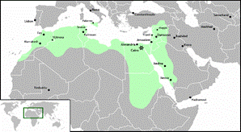
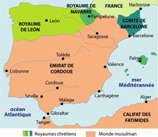

II. VĂN MINH HỒI GIÁO Ở CHÂU PHI: 641-1058
III. HỒI GIÁO Ở ĐỊA TRUNG HẢI: 649-1071
IV. HỒI GIÁO Ở Y PHA NHO: 649-1071
2. Văn minh Y Pha Nho thuộc Hồi giáo
Cận Đông chỉ là một phần nhỏ của thế giới Hồi giáo. Ai Cập nhờ Hồi giáo mà phục hưng được vinh quang thời Thượng cổ; các xứ Tunisie, Sicile và Maroc dưới sự bảo hộ của Ả Rập, lập lại được trật tự, và các thị trấn Kairouan, Palerme, Fez[205] chói lọi được một thời gian ngắn; Y Pha Nho thuộc Ả Rập là một trong những đỉnh trong lịch sử văn minh; và sau này Mông Cổ theo Hồi giáo thống trị Ấn Độ “xây cất như vị khổng lồ mà tô chuốt như thợ làm đồ châu báu”[206].
Trong khi Khalik và các nhà khác xâm lăng phương Đông, Amr ibn al-As, bảy năm sau khi Mohamet chết, đã từ Gaza ở Palestine, đem quân chiếm Pelusium, Memphis rồi tiến về phía Alexandie. Ai Cập có nhiều hải cảng và căn cứ hải quân, mà Ả Rập cần có một hạm đội; Ai Cập xuất cảng lúa mì qua Constantinople, mà Ả Rập cần lúa mì. Trong mấy thế kỉ, chính quyền Byzance ở Ai Cập đã dùng lính đánh thuê Ả Rập để giữ trật tự trong nước, thành thử cuộc xâm lăng của Ả Rập bây giờ hoá dễ dàng. Một số tín đồ Kitô giáo ở Ai Cập theo phái Nhất tính[207] bị chính quyền Byzance ngược đãi, bây giờ hoan nghênh người Hồi giáo, giúp họ chiếm Memphis, hướng dẫn họ vô Alexandrie. Khi Amr chiếm được Alexandrie sau hai mươi ba tháng bao vây (641), ông dâng thư lên vua Omar: “Không sao kể hết được những của cải trong thị trấn lớn này, cũng không tả nổi vẻ đẹp của nó; thần chỉ xin thưa rằng nó có tới bốn ngàn dinh thự, cung điện, bốn trăm nhà tắm công cộng, bốn trăm rạp hát”. Amr cấm lính cướp phá, để thu thuế có lợi hơn. Không hiểu nổi các các giáo phái Kitô khác nhau ra sao, ông cấm phái Nhất tính đã liên kết với ông, không được trả thù phái chính giáo nghịch với họ, và phá một tục lệ có hàng mấy trăm năm, tuyên bố mọi người được tự do tín ngưỡng.
Có thực Amr đã phá huỷ thư viện ở Alexandrie? Người đầu tiên chép việc đó là Abr al-Latif (1162-1231), một nhà bác học Hồi giáo; rồi người chép kĩ thêm là Bar-Hebraeus (1226-86), gốc Do Thái, theo Kitô giáo ở miền Đông Syrie, tác giả bộ Đại cương lịch sử thế giới viết bằng tiếng Ả Rập, kí tên là Abu’l-Faraj. Trong bộ đó, ông kể rằng một nhà nghiên cứu về ngữ pháp ở Alexandrie, Jean Phiopone, xin Amr những sách chép tay trong thư viện; Amr xin phép Omar, Omar đáp: “Nếu sách của bọn Hy Lạp ấy phù hợp với sách của Thượng Đế (tức kinh Coran) thì quả là vô dụng, chẳng cần phải bảo tồn; nếu không phù hợp thì chúng rất độc hại, phải huỷ đi”; truyền thuyết rút ngắn lại câu đáp khó tin ấy như vầy: “Đốt hết các thư viện đi vì tất cả đều chứa trong mỗi một cuốn sách” – tức kinh Coran. Theo Bar-Hebraeus, Amr phân phát sách trong thư viện cho các nhà tắm ở Alexandrie, và các cuộn giấy papyrus, giấy da cừu (parchemin) để đốt 4.000 chảo nấu trong 6 tháng mới hết (642). Chúng ta nên ghi những điều dưới đây trái với thuyết ấy: 1) Một phần lớn thư viện đã bị Théophile, giáo trưởng Kitô giáo, ra lệnh tiêu huỷ năm 392; 2) phần còn lại vì nạn chiến tranh và vì thiếu sự săn sóc, cho đến năm 642 gần như không còn gì; và 3) trong 500 năm, từ khi có vụ đốt sách cho tới khi có người đầu tiên ghi lại (tức Abd al-Latif), không có một sử gia Kitô giáo nào nhắc tới vụ ấy, mặc một sử gia, Eutychius, giáo chủ ở Alexandrie năm 933, đã tả cuộc Ả Rập xâm lăng Alexandrie một cách tỉ mỉ. Vì vậy ngày nay hầu hết mọi người cho rằng vụ Amr đốt sách là một truyện không đáng tin.
Dù sao sách của thư viện Alexandrie mất lần lần, cũng là một điều tai hại, vì tương truyền thư viện chứa những tác phẩm của Aschyle, Sophocle, Polybe, Tite Live, Tacite và của cả trăm tác giả khác nữa, mà ngày nay chúng ta chỉ còn giữ được những bản không toàn vẹn; ấy là chưa kể rất nhiều bài của các triết gia trước Socrate, mà bây giờ chỉ còn lại những khúc ngắn; và hàng ngàn cuốn sử, khoa học, văn học, triết học Hy Lạp, Ai Cập và La Mã.
Amr giỏi cai trị xứ Ai Cập. Ông đánh thuế nặng, dùng một phần để sửa sang các kinh, các đê, và đào lại một con kinh dài trăm cây số nối sông Nil và Hồng Hải (kinh đó năm 723 bị cát lấp, phải bỏ). Amr dựng kinh đô mới tại chỗ ông đóng quân năm 641; người ta gọi kinh đô ấy là Al-Fustat, có lẽ do một tiếng Ả Rập nghĩa là liều; Al-Fustat là hình thức đầu tiên của kinh đô Le Caire hiện nay. Tại đó, suốt hai thế kỉ (661-868), các vị thống đốc Hồi giáo thay mặt các vua ở Damas hoặc Bagdad mà cai trị Ai Cập.
Cuộc xâm lăng nào cũng tạo một biên giới mới, biên giới này dễ lâm nguy, phải gây một cuộc xâm lăng nữa. Muốn che chở thuộc địa Ai Cập khỏi bị xứ Cyrénaique[208], thuộc về Byzance, đánh vào ngang hông, một đạo quân bốn vạn lính Hồi tiến vào sa mạc chiếm Barca và tới gần Carthage[209]. Viên tướng Ả Rập cấm ngọn giáo vào cát ở khoảng trăm cây số phía Nam nước Tunisie, cất trại và dựng nên (670) một thị trấn lớn của Hồi giáo, thị trấn Kairouan, có nghĩa là “chỗ nghỉ ngơi”. Biết rằng nếu Ả Rập chiếm được Carthage thì sẽ làm chủ Địa Trung Hải mà thẳng đường tới Y Pha Nho, nên vua Hy Lạp gởi quân và một hạm đội tới; dân tộc Berbère (ở Bắc Phi), tạm quên mối thù La Mã đi mà hợp lực bảo vệ Carthay; và mãi đến năm 698, Carthay mới bị chiếm. Ít lâu sau, Phi châu bị chiếm tới bờ biển Đại Tây Dương. Dân tộc Berbère, bằng lòng gần như tự ý, tuân luật pháp và tín ngưỡng Hồi giáo. Phi châu bị chia thành ba xứ: Ai Cập mà kinh đô ở Al-Fustal; Ifrikiya[210] mà kinh đô là Kairouan; và Maghreb (Maroc hiện nay) mà kinh đô là Fez.
Trong một thế kỉ, các xứ đó cũng nhận sự cai tri của các vua Hồi giáo phương Đông. Nhưng khi triều đình dời lại Bagdad, sự giao thông và chuyên chở thêm khó khăn, lần lần các thuộc địa ở châu Phi tách ta thành những vương quốc độc lập. Ở Fez, có triều đại Idriside (789-974), ở Kairouan có triều đại Aghlabite (800-809) và ở Ai Cập có triều đại Tulunide (869-905). Cả miền đó, từ xưa vẫn sản xuất lúa mì, bây giờ không bị ngoại nhân cướp nữa, hơi phục hưng lên. Ahmad ibn Tulun (869-884) chiếm Syrie cho Ai Cập, dựng một kinh đô mới ở Katai (ngoài Al-Fustat), khuyến khích khoa học và nghệ thuật, xây cất cung điện, các nhà tắm công cộng, một dưỡng đường và một thánh thất hiện nay còn mang tên ông. Con ông ta, Khumarawayh (884-895) thiếu nghị lực, sống xa hoa, dùng vàng để dát cung điện, bắt dân phải dâng một hồ thuỷ ngân, ông lấy những nệm bằng da thổi phồng lên làm giường, thả lên hồ, để giường đong đưa nhè nhẹ cho ông dễ ngủ. Bốn chục năm sau khi ông mất, triều Tulunide bị Ikshidite (935-969) của Thổ lên thay. Những triều đại quân chủ ở châu Phi ấy không có rễ bám sâu vào lòng dân chúng cùng truyền thống dân tộc, nên phải dùng võ lực và quân đợi để giữ quyền hành; và khi họ giàu có quá rồi, không còn hiếu chiến, hùng dũng nữa thì quyền hành của họ tan rã.
Triều đại lớn nhất ở châu Phi liên kết với một giáo phái gần như cuồng tín, để tăng cường thêm sức mạnh về binh bị. Vào khoảng 905, Abu Abdallah xuất hiện ở Tunisie, truyền cái thuyết bảy imam[211], tuyên bố rằng một vị mahdi (tức chúa Cứu thế) sắp ra đời, được dân chúng Berbère theo rất đông, tới nổi có thể lật đổ triều đại Aghlabite ở Kairouan. Để thoả mãn những ước ao đã gợi lên trong lòng dân chúng, ông ta gọi từ Ả Rập tới một người tên là Obeidallah ibn Muhammad, mà ông ta bảo là cháu nội của vị Tiên tri Abdallah, rồi tôn là chúa Cứu thế, là vua (909), và chẳng bao lâu sau ông bị chính Obeidallah ra lệnh xử tử. Obeidallah tự xưng là hậu duệ của Fatima, nên triều đại ông lấy tên là Fatimide.
Dưới triều đại Aghlabite và Fatimide, Bắc Phi lại thịnh vượng như thời Carthay và đế quốc La Mã cai trị. Các nhà xâm lăng Hồi giáo buổi đầu ở thế kỉ thứ IX còn hăng hái, mở ba con đường dài từ hai ngàn rưỡi tới ba ngàn cây số đi qua sa mạc Sahara tới hồ Tchad và tới Tombuctou; ở phía Bắc và phía Tây, họ đào những cảng ở Bône, Oran, Ceuta và Tanger; có những đường thương mại phồn thịnh nối Soudan với Địa Trung Hải, nối Hồi giáo phương Đông với Maroc và Y Pha Nho. Các người Hồi giáo Y Pha Nho trốn qua Maroc, đem nghệ thuật thuộc da vào Maroc; thị trấn Fez thịnh vượng lên vì là trung tâm trao đổi với Y Pha Nho, nổi tiếng về thuốc nhuộm, dầu thơm, kiểu nón đỏ hình viên trụ không có vành[212].

Lãnh địa của các calife dòng Fatimide (909-1171) – được mở rộng sau năm 969
(http://www.zonu.com/images/0X0/2009-12-31-11550/The-Fatimid-Caliphate-9091171.png)
Năm 969, triều đại Fatimide chiếm được Ai Cập của dòng vua Ikshidie và chẳng bao lâu chiếm lan tới Ả Rập và Syrie. Vua Muizz triều đại ấy dời đô lại Kahira (Le Caire). Dưới triều đại Muizz (953-975) và con ông là Aziz (975-996), tể tướng Yakub ibn Killis, một người Do Thái ở Bagdad, cải giáo theo đạo Hồi, tổ chức lại sự cai trị Ai Cập và các vua Fatimide thành những quốc vương giàu có nhất đương thời. Khi con gái của Muizz, công chúa Rashida mất, bà để lại hai triệu bảy ngàn dinar (12.825.000 Mĩ kim) và hai ngàn chiếc áo dài; một người chị hay em của bà[213], chết đi để lại ba ngàn bình bạc, bốn trăm cây gươm khảm kim tuyến, ba chục ngàn tấm vải Sicile và một đống ngọc ngà châu báo. Nhưng không có gì phù du bằng sự thành công. Ông vua kế vị, al-Hakim (696-1021) gần như hoá điên vì quá phú cường, âm mưu giết mấy vị tể tướng, ngược đãi tín đồ Kitô giáo và Do Thái giáo, đốt giáo đường của họ, và ra lệnh phá giáo đường Saint Sépulcre (Thánh mộ) ở Jérusalem; đó là nguyên nhân gây ra Thập tự chiến. Ông ta theo gót Caligula[214], tự xưng là Thượng Đế, sai sứ giả đi khắp nước bắt dân thờ mình; một số người truyền giáo đó bị giết, ông đổi ý, lại trọng đãi tín đồ Kitô giáo và Do Thái giáo, sai xây cất giáo đường lại cho họ. Ông bị ám sát hồi ba mươi sáu tuổi.
Mặc dầu các vua chúa lộng quyền, Ai Cập vẫn thịnh vượng vì là trung tâm thương mại, nối Á với Âu. Các thương nhân Ấn và Trung Hoa đi ngang qua vịnh Ba Tư mỗi ngày một nhiều và do Hồng Hải và sông Nil, tới Ai Cập; Bagdad suy lần mà Le Caire thịnh lên. Năm 1407, Nasir-i-Khosru viếng Le Caire, bảo kinh đô mới đó có hai chục ngàn ngôi nhà mà hầu hết bằng gạch, có nhà năm sáu tầng; có hai chục ngàn cửa hàng “đầy vàng bạc, châu báu, đồ thêu và sa tanh tới nỗi không có một chỗ ngồi nữa”. Các đường phố chính đều được che nắng, ban đêm có đèn. Giá cả do chính phủ quy định, và thương gia nào đòi giá quá cao thì bị đặt lên lưng lạc đà, dắt khắp phố phường vừa đánh chuông vừa thú tội của mình. Không thiếu gì kẻ triệu phú; một phú thương theo Kitô giáo bỏ tiền ra nuôi toàn thể dân nghèo suốt năm năm đói kém vì nước sông Nil cạn; và Yakub ibn Killis để lại một gia sản gần bằng ba chục triệu Mĩ kim. Các phú gia đó hợp lực với các vua chúa để xây cất thánh thất, thư viện, học viện, khuyến khích khoa học và nghệ thuật. Các triều vua Fatimide mặc dầu đôi khi tàn bạo, luôn luôn xa xỉ, bóc lột sức lao động và gây khá nhiều chiến tranh, nhưng xét chung chính trị họ tốt, khoan dung, không kém một thời đại nào trong lịch sử Ả Rập về văn hóa và sự thịnh vượng.
Thịnh nhất là triều đại lâu dài của Mustansir (1036-1094), con một nữ tì gốc Soudan. Ông sai cất một cung riêng để hưởng lạc, suốt đời uống rượu, nghe đàn ca, nghỉ ngơi. Ông bảo: “Như vậy thích hơn là ngó đăm đăm Phiến Đá đen, nghe lời tụng niệm của các tu sĩ và uống nước dơ” (trong cái giếng thiêng Zemzem ở La Mecque). Năm 1067, các đạo quân Thổ Nhĩ Kỳ của ông nổi loạn, đốt phá cung điện, cướp những nghệ phẩm vô giá, vô số châu báu, còn sách chép tay phải hai mươi lăm con lạc đà chở mới hết; bọn sĩ quan Thổ đốt những sách đó để sưởi; lột bìa da rất đẹp ra để vá dép cho nô lệ của họ. Mustansir chết rồi, đế quốc Fatimide tan rã; đạo quân trước kia rất mạnh của ông chia rẽ thành nhiều loạn đảng Berbère, Soudan, Thổ, gây lộn với nhau; hai xứ Ifrikiya và Maroc đã tách ra khỏi đế quốc rồi, xứ Palestine cũng nổi loạn, còn xứ Syrie về tay kẻ khác. Năm 1171, ông vua cuối cùng của dòng Fatimide bị Saladin truất ngôi, thế là thêm một triều đại Ai Cập nữa tàn tạ vì quyền hành và phóng túng hưởng lạc.
Các triều đình Le Caire, Kairouan và Fez ganh đua nhau khuyến khích các ngành kiến trúc, hoạ, nhạc, thơ và triết. Nhưng hầu hết các sách chép tay còn lại của châu Phi Hồi giáo thời đó hiện còn cất kĩ trong các thư viện, chỉ một số học giả châu Âu mới bắt đầu đương nghiên cứu; nhiều nghệ phẩm bị phá hoại, chỉ các thánh thất là còn lưu lại sức mạnh và tinh thần thời ấy. Ở Kairouan có thánh thất Sidi Okaba xây cất năm 670, trùng tu lại bảy lần, nhất là năm 838; các tu viện nóc vòng cung bán nguyệt, có hàng trăm cột đỡ, đều chở từ các phế tích ở Carthage lại; giảng đàn là một nghệ phẩm chạm trổ trên gỗ, khán thờ bằng vân ban thạch (porphure) và sứ, thật lộng lẫy; ngọn tháp, vuông, to lớn – cổ nhất thế giới – là một kiểu kiến trúc Syrie. Nhờ thánh thất mà Kairouan thành thánh địa thứ tư của Hồi giáo, một trong “bốn cửa vào thiên đường”. Các thánh thất ở Fez, Marrakech, Tunis, Tripolie cũng đẹp và thiêng không kém bao nhiêu.
Tại Le Caire, các thánh thất vừa nhiều vừa rộng lớn, hiện nay còn ba trăm thánh thất trang hoàng cho kinh đô đẹp đẽ ấy. Thánh thất của Amr, bắt đầu xây cất năm 642, dựng lại vào thế kỉ thứ X; trừ những cột đẹp kiểu Corinthe, còn thì bộ phận nào cũng thay đổi, không như hồi đầu nữa. Thánh thất Ibn Tulun (878) khó khăn lắm mới duy trì được hình thức và các trang trí hồi đầu. Một bức thành cao có đục lỗ bao một khu sân rộng; phía trong là những vòng cung nhọn cổ nhất Ai Cập – trừ vòng cung Nilomètre (865) cất tại một cù lao trên sông Nil để đo mực nước mùa lụt; hình vòng cung đẹp và tiện đó có lẽ đã truyền từ Ai Cập qua châu Âu do đảo Sicile và người Normand đến người Gothique ở châu Âu[215]. Trong cái tháp và trong mộ của Ibn Tulun, có những vòng cung hình móng ngựa, xấu nhất trong kiến trúc Hồi giáo (…). Và để mở đường cho kiến trúc giáo đường Chartre ở Pháp sau này, một số cửa sổ có lấp kính màu, và với những song sắt đúc theo hình bông hồng, ngôi sao và các kiểu hình học khác; nhưng những song sắt ấy không biết chắc vào thời nào.
Từ 970 đến 972, Jauhar, vốn là một nô lệ theo Kitô giáo, sau bỏ đạo, theo Hồi giáo, giúp dòng Fatimide chiếm được Ai Cập, cho xây cất thánh thất el-Azhar (có nghĩa là rực rỡ); hiện nay còn một phần kiến trúc nguyên thuỷ; cũng có những vòng cung nhọn dựng trên đầu ba trăm tám mươi cột bằng cẩm thạch, đá hoa cương và vân ban thạch. Thánh thất al-Hakim (990-1012) xây bằng đá, phần chính còn nhưng đã đổ nát, nhìn những hình và chữ chạm trổ trên các trụ gạch cũng biết thời Trung cổ nó rực rỡ ra sao. Bây giờ những thánh thất ấy coi ghê rợn như những đồn luỹ (có lẽ là do mục đích của người xây cất), nhưng hồi xưa trang hoàng, chạm trổ rất đẹp, có những khán thờ, những chúc đài mà các tàng cổ viện coi là báo vật. Thánh thất Ibn Tulun có 18.000 ngọn đèn mà nhiều ngọn bằng thuỷ tinh màu tráng men.
Tiểu công nghệ ở Ả Rập cũng là nghệ thuật nhỏ của Hồi giáo. Thánh thất Kairouan có những phiến ngói nhẵn bóng. Nasir-i-Khosru (1050) khen đồ sành ở Le Caire là “đẹp và trong tới nỗi từ bên trong có thể nhìn thấy bàn tay đặt lên bên ngoài”. Thuỷ tinh Ai Cập và Syrie vẫn tốt như thời trước. Nhiều vật bằng pha lê từ thời Fatimide, bây giờ còn nguyên vẹn và được trân tàng ở Venise, Florence và Le Louvre (Pháp). Cửa giảng đàn, khán thờ và chấn song cửa sổ bằng gỗ chạm, hoặc được làm bằng cách khảm, cẩn ngà, xương, xà cừ hoặc gỗ vào. Bảo vật nhiều vô kể. Khi bọn lính đánh thuê Thổ Nhĩ Kỳ cướp bóc cung điện của al-Mustansir, họ chở theo hằng ngàn đồ bằng vàng: bình mực, quân cờ, bình, chim, cây nhân tạo nạm ngọc… Họ đoạt được nhiều tấm màn bằng gấm chạy kim tuyến, thêu hình và tiểu sử các vua nổi danh. Người Hồi còn học được của người Ai Cập cách in hình, Thập tự quân truyền từ Ai Cập qua châu Âu và giúp cho ngành ấn loát phát triển. Thương nhân châu Âu khen các thứ vải, lụa thời Fatimide tốt hơn hết thảy các thứ khác, nhất là lụa ở Le Caire, Alexandrie mỏng và mịn tới nỗi có thể luồn một chiếc áo dài qua một chiếc nhẫn được. Người ta ca tụng các thảm rực rỡ, các thứ lều bằng nhung, sa tanh, lụa, nỉ có vẽ hình để trang hoàng; một chiếc lều của Yazuri, tể tướng dưới triều al-Mustasir, phải một trăm năm mươi thợ làm chín năm mới xong, tốn ba vạn dinar (142.500 Mĩ kim), và tương truyền có vẽ, thêu hình đủ các loài vật trên thế giới. Những tranh vẽ thời Fatimide, hiện nay chỉ còn lại vài bức bích hoạ ở Tàng cổ viện tại Le Caire. Các tiểu hoạ mất hết rồi, nhưng Makrizi, tác giả một bộ sử ở thế kỉ XV, chép rằng thư viện của các vua Fatimide có mấy trăm[216] cuốn sách viết tay tô điểm bằng những hình màu rực rỡ, trong số đó có tới 2.400 kinh Coran.
Thời vua al-Hakim, thư viện nhà vua ở Le Caire có trăm ngàn cuốn, thời al-Mastansir hai trăm ngàn cuốn. Sử chép rằng các sinh viên giỏi đều được mượn những sách ấy mà không phải đóng một số tiền nào cả. Năm 988, tể tướng Yakub ibn Killis thuyết phục vua mở lớp dạy và nuôi ba mươi lăm sinh viên, trong thánh thất al-Azhar; đó là viện đại học cổ nhất. Viện đó sau phát triển lên, thu hút sinh viên trên khắp đế quốc Hồi giáo, cũng như Viện Đại học Paris một thế kỉ sau, thu hút khắp châu Âu. Vua, tổng lí đại thần[217], và phú gia, mỗi năm mỗi tăng thêm học bổng, thành thử al-Azhar có khoảng 10.000 sinh viên và 300 giáo sư. Đi vòng quanh thế giới thì một trong những cảnh vui nhất ta được coi là cảnh sinh viên trong các tu viện ở thánh thất cổ cả ngàn năm ấy, họp thành từng nhóm, mỗi nhóm ngồi xổm thành hình bán nguyệt chung quanh một chân cột, trước mặt một nhà bác học cũng ngồi. Hồi xưa nhiều học giả nổi danh, từ khắp nơi trong đế quốc, lại đó dạy ngữ pháp, tu từ pháp, toán học, thần học, lí luận học, thơ, luật học, giảng kinh Coran và các truyền thuyết. Sinh viên không phải đóng học phí mà giáo sư cũng không nhận một số lương nào cả. Đại học ấy toàn trông cậy vào sự trợ cấp của chính quyền và các nhà hảo tâm, có xu hướng chính mỗi ngày mỗi nghiêm thêm và các nhà bác học quan trọng trong viện đã ảnh hưởng một cách đáng chán tới văn học, triết học và khoa học thời đại Fatimide. Thời đó không có một thi sĩ nào lớn cả.
Al-Hakim xây dựng ở Le Caire một “Lâu đài Minh triết” (Dar al-Hikmah), mục đích chính để dạy môn thần học, nhưng cũng dạy thêm môn thiên văn và môn y học. Ông dựng một đài thiên văn và giúp đỡ Ali ibn Yunus (mất năm 1009), thiên văn gia có lẽ danh tiếng nhất của Hồi giáo. Sau mười bảy năm quan sát, tính toán, ông bổ túc các bảng thiên văn cho đủ hơn và đúng hơn.
Nhà khoa học Ai Cập Hồi giáo có danh chói lọi nhất là Muhammad ibn al-Haitham, mà ở châu Âu thời Trung cổ người ta gọi là Alhazen. Sinh ở Bassora năm 965, ông nổi danh là toán học gia và kĩ sư ở quê hương. Al-Hakim nghe nói ông có một kế hoạch làm điều hoà mức nước lụt hàng năm của sông Nil, vời ông lại Le Caire. Kế hoạch ấy xét ra không thực hiện được, và al-Haitham phải trốn tránh, sợ những phản ứng bất ngờ của nhà vua. Như hết thảy các tư tưởng gia thời Trung cổ, ông thấy Aristote muốn tổng hợp trí thức nhân loại một cách hợp lí, mà cũng bị đó cám dỗ, nên ông viết nhiều cuốn giải thích, phê bình các tác phẩm của Aristote; hiện nay những cuốn đó đã thất truyền. Chúng ta biết ông nhờ cuốn Kitab al-Managir (Sách Quang học) của ông hơn cả; tác phẩm ấy có lẽ là tác phẩm có tính cách khoa học nhất thời Trung cổ, cả về phương pháp lẫn tư tưởng. Al-Haitham nghiên cứu sự khúc xạ ánh sáng trong những khoảng trong suốt như không khí, nước và suýt phát minh được thứ kính làm lớn hình lên, và ba thế kỉ sau, Roger Bacon, Witelo và nhiều nhà bác học châu Âu khác đã dựa vào những công việc của ông, chế được kính hiển vi và kính viễn vọng. Ông gạt bỏ thuyết của Euclite và Ptolémée (theo thuyết ấy, sở dĩ ta nhìn thấy một vật là do tia sáng từ vật đó đập vào mắt ta, và bảo “hình thể của vật vào mắt ta, nhờ một vật thông suốt”, tức thuỷ tinh thể (lentille) trong mắt. Ông nhận thấy rằng không khí làm cho hình mặt trời và mặt trăng lớn lên khi ở gần chân trời; ông chứng tỏ rằng do sự khúc xạ ánh sáng trong không khí mà chúng ta vẫn thấy tia sáng mặt trời khi mặt trời đã xuống tới mười chín độ dưới chân trời; căn cứ vào đó ông tính rằng lớp không khí chung quanh trái đất dầy tới mười lăm cây số. Khi ông phân tích sự giao hỗ giữa sức nặng và tỉ trọng không khí, và tác động của tỉ trọng không khí tới sức nặng của mọi vật. Ông dùng những công thức toán học rắc rối để nghiên cứu tác động của ánh sáng lên các tấm gương hình cầu hoặc mặt pa-ra-bol (parabol) và qua một thấu kính hội tụ (lentille convergente). Ông nhận xét hình bán nguyệt của mặt trời khi có nhật thực, chiếu lên một bức tường đối diện với một lỗ nhỏ đục trong cánh cửa sổ; đó là lần đầu tiên chúng ta nghe nói về “phóng tối” làm căn bản cho thuật chụp hình. Ảnh hưởng của al-Haitham tới khoa học châu Âu thật lớn lao. Không có ông thì Roger Bacon không được nổi danh; trong cuốn Opus maius, phần nói về quang học, Bacon gần như mỗi đoạn trích dẫn lời ông; và phần thứ sáu cuốn đó gần như hoàn toàn xây dựng trên những phát minh của nhà vật lí học ở Le Caire ấy. Ngay tới thời Képler và Léonard[218], các công trình nghiên cứu của châu Âu về ánh sáng đều dựa và tác phẩm của al-Haitham.
Người Ả Rập xâm chiếm Bắc Phi, gây nên một hậu quả đặt biệt này là Kitô giáo suy lần ở đó, tới gần như mất hẳn. Dân tộc Berbère không những theo Hồi giáo mà còn cuồng nhiệt bảo vệ nó hơn cả. Có lẽ cũng do những nguyên nhân kinh tế: những người không theo Hồi giáo phải đóng một thứ thuế thân. Còn những người cải giáo thì được miễn trong một thời gian. Năm 744, khi viên Thống đốc Ả Rập ở Ai Cập ban lệnh những thuế ấy, 24.000 người bỏ Kitô giáo mà theo Hồi giáo. Những cuộc ngược đãi lâu lâu mới xảy ra nhưng lần nào cũng tàn bạo, có lẽ vì vậy mà nhiều người Kitô giáo phải theo Hồi giáo. Ở Ai Cập, một thiểu số giáo đồ Kitô giáo can đảm đề kháng, cất những giáo đường vững chắc như thành luỹ, lén lút làm lễ và tồn tại được đến ngày nay. Nhưng các giáo đường hồi xưa đầy dãy Alexandrie, Cyrène, Carthay và Hippone, bị bỏ hoang, nhà hư nát; các giáo phái Kitô hết gây gổ nhau, bây giờ tới lượt các giáo phái Hồi tranh nhau làm hậu thuẫn, gom tín đồ lại thành một hội kín lớn, đặt ra những lễ thụ pháp rắc rối, nhiều giai cấp tu sĩ, dùng hội viên để do thám và âm mưu chính trị; những hình thức hội kín đó, truyền qua Jérusalem rồi châu Âu, ảnh hưởng lớn tới các tổ chức, các nghi thức và y phục của giáo đoàn Templier (do Hugues de Payes thành lập năm 1118), giáo đoàn “Thiên khải” (Illuminé) và nhiều hội kín khác của châu Âu. Bây giờ nhà kinh doanh theo lối Mĩ ở Ả Rập, lâu lâu cũng tỏ ra mình là một tín đồ Hồi giáo nhiệt thành, vinh hạnh về đạo bí mật, chiếc mũ fez và về thánh thất của mình.
Chiếm được Syrie và Ai Cập rồi, các thủ lĩnh Hồi giáo biết rằng phải có một hạm đội mới bảo vệ bờ biển được. Ít lâu sau, quân đội của họ chiếm Chypre, Rhodes và đánh bại hạm đội Byzance (652-655). Các đảo Corse bị chiếm năm 809, Sardaigne năm 810, Crète năm 823, Malte năm 870. Năm 827, họ tranh giành đảo Sicile; các vua triều đại Aghlabite ở Kairouan gởi hết hạm đội nọ tới hạm đội kia, cuộc xâm lăng tiến hành, đổ máu nhiều mà cướp bóc cũng dữ. Palerme thất thủ năm 831, Messine 843, Syracuse năm 878, Taormine năm 902. Khi các vua Fatimide nối ngôi các vua Aghlabite (909), họ được hưởng di sản Sicile. Rồi khi họ dời đô lại Le Caire, viên quan cai trị Sicile là Husein al-Kalbi tự phong là emir (đô đốc), quyền hành gần như một ông vua, và sáng lập triều đại Kalbite, làm cho văn minh Hồi giáo ở Sicile lên tới tột đỉnh.
Làm chúa tể Địa Trung Hải rồi, hùng cường thêm rồi, các vua Hồi giáo bây giờ mới ngó tới các thị trấn ở Nam Ý mà thấy thèm. Vì sự cướp phá thời đó đã thành lệ, Kitô giáo và Hồi giáo tấn công bờ biển của nhau, để bắt các người ngoại đạo đem bán làm nô lệ, cho nên thế kỉ thứ IX các hạm đội Hồi giáo từ Tunisie hoặc Sicile tới, bắt đầu đánh phá, cướp bóc các hải cảng Ý. Năm 841, Hồi giáo chiến Bari, căn cứ chính của Byzane ở Đông Nam Ý. Một năm sau, công tước De Benevent ở Lombardie cầu viện họ để chống lại Sarlerne, họ nhân cơ hội ấy, đi khắp Ý từ Nam lên Bắc rồi từ Bắc xuống Nam, tới đâu cũng cướp bóc từ trại ruộng tới tu viện. Năm 846, 1.100 quân Hồi giáo đổ bộ lên Ostie, tiến tới chân thành La Mã, tự do cướp bốc ngoại ô và các giáo đường Saint Pierre và Saint Paul, rồi ung dung chở xuống tàu. Thấy các nhà cầm quyền không tổ chức được sự bảo vệ nước Ý, giáo hoàng Léon IV phải tự đảm nhiệm lấy việc ấy, tập hợp Amalfi, Gaete và La Mã thành một liên minh và sai giăng một dây xích lớn ngang sông Tibre để ngăn tàu địch. Năm 849, Hồi giáo lại tính chiếm La Mã một lần nữa. Hạm đội Ý thống nhất rồi, được giáo hoàng chúc phúc cho xông ra và đánh tan quân địch – Raphael vẽ cảnh chiến thắng ấy lên tường trong điện Vatican. Năm 866, hoàng đế Louis II đem quân từ Germanie, đánh đuổi bọn trộm cướp Hồi giáo xuống Bari và Tarente. Khoảng 884, chúng bị trục xuất khỏi bán đảo Ý.
Nhưng chúng vẫn tiếp tục xâm nhập và trong một thế hệ, dân miền Trung Ý hồi hộp lo sợ hằng ngày. Năm 876, chúng cướp phá miền Campagne; La Mã lâm nguy tới nỗi giáo hoàng phải nộp cho chúng một số tiền “ân tứ”, mỗi năm là hai mươi lăm ngàn mancusi (khoảng 25.000 Mĩ kim), chúng mới để yên. Năm 884, chúng đốt đại tu viện Núi Cassin; trong những cuộc tấn công nhỏ rải rác khắp nơi, chúng tàn phá thung lũng Anio; sau cùng quân đội của giáo hoàng, các hoàng đế Hy Lạp Germanie và các thị trấn Nam và Trung Ý hợp lực nhau thắng được chúng trên sông Garigliano (916) và chấm dứt một thế kỉ xâm lăng bi đát. Ý và có lẽ Kitô giáo nữa, thoát được trong đường tơ kẻ tóc; nếu La Mã thất thủ thì Hồi giáo sẽ tiến về Venie, và Venice mất thì Constantinople sẽ kẹt ở giữa hai gọng kìm mạnh mẽ của Hồi giáo. Tín ngưỡng của hàng tỉ người tuỳ thuộc sự may rủi trên chiến trường.
Trong thời gian ấy, nền văn hóa Sicile lần lần nhượng bộ kẻ xâm lăng mới tới, cho nên có một lớp sơn Hồi giáo. Các giống người Sicile, Hy Lạp, Lombard, Do Thái, Berbère và Ả Rập chen nhau trong các đường phố kinh đô Hồi giáo, xưa có tên là Panormus, Ả Rập gọi là Balerm, Ý gọi là Palermo; về tôn giáo, họ câm thù nhau, nhưng vẫn sống chung với nhau, có chung tính đam mê, gian ác và thích thơ của dân Sicile. Vào khoảng 970, nhà địa lí Ibn Hawkal thấy ở đó khoảng ba trăm thánh thất và ba trăm thầy giáo được dân kính trọng, “mặc dầu ai cũng biết bọn thầy giáo ấy trí óc đần độn”. Nhờ nhiều nắng, nhiều mưa, cây cối xanh tốt, đảo Sicile là một thiên đường cho nhà nông; và người Ả Rập khéo áp dụng một chính sách kinh tế để hưởng lợi. Palerme thành một hải cảng trao đổi hoá vật giữa châu Âu Kitô giáo và châu Phi Hồi giáo, chẳng bao lâu thành một những thị trấn giàu nhất Hồi giáo. Người Hồi mặc đẹp, đeo những đồ trang sức rực rỡ và thích nghệ thuật trang trí, tạo nên một lối sống hưởng lạc thanh nhã ở Sicile. Thi sĩ Sicile Ibn Hamdis (khoảng (1055-1132) ngâm vịnh những thú vui của thanh niên Palerme: cảnh hành lạc nửa đêm, hoặc cảnh vui vẻ rủ nhau lại một tu viện, hỏi mua rượu, làm cho một nữ tu sĩ phải kinh ngạc nhưng rồi vui vẻ chiều ý, hoặc cảnh trai gái đùa giỡn với nhau trong ngày hội, “khi mà thần khoái lạc đã cấm người ta lo nghĩ, ưu tư”, còn các ca nhi đưa những ngón tay búp măng vuốt những dây đàn luth rồi khiêu vũ, “rực rỡ như những mặt trăng trên cành liễu”.
Có mấy ngàn thi sĩ trong đảo vì người Maure (người Bắc Phi) rất thích thơ và tìm được nhiều đề tài trong tình ái ở Sicile. Cũng có nhiều học giả vì Palerme tự hào có một đại học; nhiều y sĩ giỏi vì y học Hồi giáo ở Sicile ảnh hưởng tới y khoa ở Salerne. Đảo Sicile sau thuộc về người Normand, sở dĩ rực rỡ được, một nửa là nhờ công của người Ả Rập đã truyền lại những nghề và thợ thủ công phương Đông cho một dân tộc có một nền văn hóa còn trẻ, ham học hỏi với bất kì giống người nào, bất kì tôn giáo nào. Người Normand xâm chiếm đảo (1060-1091) làm cho những di tích Hồi giáo mờ dần đi; bá tước Roger khoe rằng đã “san phẳng các lâu đài Hồi giáo tuyệt đẹp”. Nhưng kiến trúc Hồi giáo vẫn còn lưu dấu vết trên điện La Zira và trên trần giáo đường Palatine, trong cung các vua Normand; trong giáo đường này, điện thờ chúa Kitô nhờ cách trang hoàng Hồi giáo mà nổi bật lên rực rỡ.
Mới đầu là người Maure chứ không phải người Ả Rập xâm chiến Y Pha Nho. Tarik là một người Berbère, đạo quân ông gồm 7.000 người Berbère và chỉ có 300 người Ả Rập. Tên ông được đục trong núi đá ở bờ biển, nơi quân đội ông đổ bộ lên; người Maure sau gọi núi đó là Gebel al-Tarik (Núi Tarik), và người Âu đọc thành Gibraltar. Tarik được viên thống đốc Ả Rập ở Bắc Phi tên là Musa ibn Nusayr phái qua Y Pha Nho. Năm 712, Musa vượt biển với 10.000 quân Ả Rập, 8.000 quân Maure, bao vây rồi chiếm Séville và Mérida; mắng Tarit sau dám vượt lệnh mình, quất bằng roi rồi nhốt khám. Vua Hồi Walid triệu hồi Musa, thả Tarik ra, để ông này tiếp tục xâm lăng Y Pha Nho. Musa đã phong con trai là Abn al-Aziz làm thống đốc. Suleiman, em của Walid, ngờ Abd al-Aziz có âm mưu làm chúa tể Y Pha Nho, không phục tùng triều đình nữa, nên phái người tới ám sát. Thủ cấp của al-Aziz đem về dâng Suleiman, lúc đó đã lên ngôi ở Damas; Suleiman cho gọi Musa lại. Musa xin đem thủ cấp của con về “để vuốt mắt cho nó”. Không đầy một năm sau, Musa rầu rĩ mà chết. Người ta ngờ rằng chuyện đó vô cớ.
Bọn xâm lăng đối với bọn bại trận một cách dễ chịu, chỉ tịch thu đất cát của những kẻ tích cực kháng chiến, đánh thuế không nặng hơn các vua Visigoth trước kia, cho dân chúng được tự do tín ngưỡng, điều đó rất hiếm thấy ở Y Pha Nho. Nắm vững được Y Pha Nho rồi, họ vượt dãy núi Pyrenées vào xứ Gaule (nay là nước Pháp) tính chiếm trọn châu Âu làm thành một thuộc của Damas. Ở vào khoảng giữa Tours và Poitiers, cách Gibraltar một ngàn rưỡi cây số về phía Bắc, họ đụng đầu với liên quân của Eudes, công tước Aquitaine, và Chales, công tước Austrasie. Sau 7 ngày chiến đấu, quân Hồi giáo đại bại trong những trận quyết định nhất của lịch sử (732); lần này cũng vậy, tín ngưỡng của biết bao nhiêu triệu người tuỳ thuộc sự may rủi trên chiến trường. Sau trận đó, Charles được tặng biệt hiệu là Carolus Martellus, hay Charles Martel, tức Charles Lưỡi búa. Năm 735, Hồi giáo lại tấn công, chiếm được Arles; năm 737 họ chiếm Avignon và tàn phá thung lũng sông Rhône cho tới Lyon. Sau cùng, năm 759, Pépin le Bref đuổi họ ra khỏi miền Nam nước Pháp; có lẽ nhờ bốn chục năm Hồi giáo qua lại trong miền ấy mà xứ Languedoc có tinh thần khoan dung với mọi tín ngưỡng – điều đó ít thấy ở châu Âu – tinh thần vui vẻ trẻ trung thích các điệu hát xuân tình, bất chính.
Các vua Hồi giáo ở Damas coi thường xứ Y Pha Nho; mãi tới năm 756, họ chỉ gọi xứ đó là “vùng Andalousie”, do một viên thống đốc Kairouan cai trị. Nhưng năm 755, một nhân vật tới Y Pha Nho, y như trong tiểu thuyết, ông ta hai bàn tay trắng, một tấc sắt cũng không, chỉ có dòng máu hoàng tộc mà dựng nổi một triều đại phú cường, vẻ vang không kém các vua ở Bagdad. Năm 750, khi dòng họ Abbaside thắng trận, ra lệnh tru di tất cả các hoàng thân của dòng họ Omeyyade, thì Abd-er-Rahman, cháu nội vua Hisham, là người dòng Omeyyade duy nhất trốn thoát được. Bị truy nã từ làng này sang làng khác, ông ta lội qua con sông rộng Euphrate, trốn sang Palestine, Ai Cập, Phi châu, sau cùng tới xứ Maroc. Cuộc cách mạng của triều đại Abbaside làm tăng sự chia rẽ, kình địch giữa các người Ả Rập, Syrie, Ba Tư và Maure ở Y Pha Nho; một nhóm Ả Rập trung thành với dòng Omeyyade, sợ triều đình Abbaside bắt họ phải trả lại hết những đất trước kia các thống đốc Omeyyade phân phát cho, bàn với Abd-er-Rahman đứng về phe họ và chỉ huy họ. Ông ta tới và được tôn làm đô đốc Cordoue (856). Ông đánh bại một đạo quân do al-Mansur phái tới truất ngôi ông, và sai người bêu thủ cấp viên tướng bại trận trước một cung điện ở La Mecque.
Có lẽ nhờ những biến cố ấy mà châu Âu khỏi phải theo Hồi giáo, vì Hồi giáo ở Y Pha Nho bị nội chiến mà suy yếu, không được ngoại viện, mới thôi không xâm lăng nữa, lại còn rút ra khỏi phía Bắc Y Pha Nho. Từ thế kỉ thứ IX tới thế kỉ thứ XI, bán đảo ấy bị chia làm hai phần theo con đường từ Coimbre ngang qua Saragosse và dọc theo sông Ebre; một phần về Hồi giáo, một phần về Kitô giáo. Phía Nam thuộc về Hồi giáo được Abd-er-Rahman và các người kế vị bình định, nên vượng lên, thơ và nghệ thuật thịnh phát. Abd-er-Rahman II (822-852) được hưởng sự thịnh vượng ấy. Trong khi phải chống với Kitô giáo ở biên giới, phải dẹp nội loạn và đánh đuổi bọn Normand xâm nhập bờ biển, ông vẫn có thì giờ xây dựng cung điện, thánh thất cho Cordoue đẹp lên, thưởng các thi sĩ rất hậu và vui vẻ tha thứ những kẻ đã xúc phạm đến ông; nhưng sự khoan dung ấy có lẽ một phần đã gây ra sự hỗn độn trong xã hội ở dưới triều người kế vị ông.

Bán đảo Iberian[219] năm 910
(http://www.memo.fr/Media/Peninsule-Iberique_910.jpg)
Abd-er-Rahman III (912-961) là ông vua tài giỏi nhất của triều đại Omeyyade ở Y Pha Nho. Khi ông lên ngôi năm hai mươi mốt tuổi, xứ “Andaluz” (tức Andalousic), giang sơn của ông bị chia rẽ, loạn lạc vì các giống người căm thù lẫn nhau, các tôn giáo cừu hận nhau, mà cướp bóc xảy ra khắp nơi, lại thêm hai thị trấn Séville và Tolède nổi tiếng, đòi độc lập. Mặc dầu tính tình phong nhã, nổi tiếng là đại lượng và lễ độ, ông cương quyết đương đầu với tình thế, dẹp được hai thị trấn nổi loạn, khuất phục được bọn quí tộc Ả Rập muốn làm lãnh chúa trong những đất đai phong phú của họ, y như bọn quí tộc Pháp đương thời. Ông dùng những người đủ các tôn giáo, sung vào nội các cùng các hội đồng, khéo léo liên kết để giữ một sự quân bình về sức mạnh trong các nước láng giềng và các nước thù nghịch với ông; ông trị dân rất siêng, việc gì cũng để mắt tới, như Napoléon. Ông chuẩn bị các cuộc hành quân cho các tướng lĩnh, nhiều khi đích thân cầm quân, đẩy lui được cuộc xâm lăng của Sanche de Navarre, chiếm được và tàn phá kinh đô của Sanche, khiến cho suốt thời gian ông trị vì, không có lực lượng Kitô giáo nào dám gây hấn với ông nữa. Năm 929, cảm thấy mình đã hùng cường như bất kì ông vua nào đương thời, lại biết rằng vua Hồi ở Bagdad bị bọn Thổ Nhĩ Kỳ giật dây, ông tự phong mình là calife – tức vị Chỉ huy tất cả các tín đồ và Bảo vệ tôn giáo. Ông chết, để lại những hàng khiêm tốn dưới đây do chính tay ông viết về kiếp người:
“Ta bây giờ đã trị vì trên năm chục năm (theo Hồi giáo)[220] trong cảnh thắng trận hoặc cảnh thanh bình… Của cải và danh dự, quyền hành và thú vui, cái gì ta cũng có đủ, cơ hồ ta được hưởng hết những hạnh phúc của loài người. Trong cái tình thế địa vị ấy, ta đã đếm kĩ những ngày hạnh phúc hoàn toàn thực sự trời ban cho ta, thì chỉ được có mười bốn ngày! Vậy thì ai ơi, đừng nên tin gì ở cõi trần này cả!”
Con ông, Hakam II (961-976) khéo lợi dụng được nửa thế kỉ thịnh vượng mà hạnh phúc ấy. Khỏi lo ngoại xâm và nội loạn, ông chuyên tô điểm cho Cordue và các thị trấn khác, xây cất thánh thất, học viện, dưỡng đường, nhà tắm công cộng và nhà dưỡng bần; ông làm cho đại học Cordue thành một học viện đồ sộ nhất đương thời; lại giúp đỡ cho hàng trăm thi sĩ, nhà bác học. Sử gia Hồi giáo al-Makkari[221] viết:
“Hơn hết thảy các triều đại trước, vua Hakam yêu và nghiên cứu văn học, khoa học mà đích thân ông khuyến khích… ông biến xứ Andalousie thành một thị trường mênh mông, bày bán tức thì tất cả các tác phẩm văn chương mới xuất bản ở bất kì xứ nào. Ông phái nhân viên tới những xứ xa xôi thu thập sách về cho ông, giao cho họ những số tiền rất lớn, riết rồi số sách chở về Andalousie nhiều không đếm xuể. Ông gởi cả những số tiền mặt cho các tác giả nổi tiếng ở phương Đông để khuyến khích công việc xuất bản, và để có những bản đầu tiên. Chẳng hạn nghe nói Abu’l Faraj ở Ispahan đã viết một cuốn nhan đề là Kitab-ul-Aghani[222]; ông gởi tặng một ngàn dinar bằng vàng ròng (4.750 Mĩ kim), và tác giả gởi tặng ông bản đầu tiên, trước khi sách phát hành ở Irak”.
Để được hưởng những lạc thú tinh thần trong cuộc sống, nhà vua – học giả – ấy giao việc trị nước và cả đường lối chính trị cho vị tể tướng Do Thái khôn kheo là Hasdai ibn Shaprut, và việc thống suất quân đội cho một viên tướng giỏi, nhưng ít lương thiện tên là Almanzor mà sau nhiều tác giả Kitô giáo dùng làm nhân vật trong một số bi kịch hoặc tiểu thuyết. Viên tướng ấy tên thực là Muhammad ibn Abi Amir, sinh trong một gia đình kì cựu Ả Rập, tuy là vọng tộc nhưng nghèo; mới đầu ông ta sống nhờ làm đơn thuê cho những người muốn thỉnh cầu nhà vua điều gì; sau thành một nhân viên trong phòng giấy quan kadi (tổng biện lí); năm 967, hai mươi sáu tuổi, ông được giao việc quản lí tài sản người con cả của al-Hakam, cũng trong dòng họ Adb-er-Rahman. Ông ta được lòng bà mẹ thanh niên ấy, hoàng hậu Subh, nhờ thái độ rất lễ phép, khéo nịnh hót và làm việc không biết mệt; ông quản lí tài sản cho mẹ cũng khéo như cho con, và không đầy một năm, được cất lên chức “giám đốc tiền bạc”. Lúc đó ông rất rộng rãi với bạn bè, khiến cho kẻ thù của ông buộc tội ông tiêu lạm tiền của chủ. Al-Hakam bèn gọi ông tới biện bạch; biết rằng không có cách nào biện bạch được, ông hỏi một người bạn giàu có cho ông mượn một số tiền để bù vào chỗ thiếu hụt; có số tiền ấy rồi, ông vô cùng hiên ngang đương đầu với những kẻ buộc tội ông và thắng họ một cách vẻ vang khiến nhà vua bổ dụng ông kiêm nhiệm mấy chỗ hốt ra bạc. Khi Hakam chết, Ibn Abi Amir đích thân chỉ huy việc ám sát một kẻ muốn tranh ngôi, để cho con của Hakam lên ngôi, tức Hisham II (976-1009; 1010-1013)[223]. Một tuần lễ sau ông được phong làm tổng lí đại thần.
Hisham II là con người nhu nhược, hoàn toàn không trị dân được; từ 878 tới 1002 Ibn Abi cai trị thay ông ta. Kẻ thù của ông buộc tội ông ta là yêu triết lí hơn Hồi giáo, điều đó đúng; để bịt miệng họ, ông bảo các nhà thần học chính thống lục trong thư viện của al-Hakam, tất cả các sách tỏ ý nghi ngờ tín ngưỡng truyền thống rồi đem đốt; hành vi phá hoại đê tiện ấy có lợi cho ông; ông nổi danh là sùng đạo. Đồng thời, để giới trí thức ủng hộ, ông lén che chở các triết gia, niềm nở tiếp đãi các nhà văn học, đi theo ông khi ông đi dẹp giặc để làm thơ ca tụng những chiến thắng của ông. Ông xây dựng một thị trấn mới, Zihara, ở phía Đông Cordoue, đời dinh của ông và của nha thự lại đó, còn vị vua trẻ chỉ say mê thần học, vẫn sống trong cung điện cũ, gần như bị giam lỏng, chẳng ai săn sóc tới. Để củng cố địa vị, Ibn Abi Amir tổ chức lại quân đội, dùng nhiều nhất là bọn lính đánh thuê Berbère và Kitô giáo, vì bọn người này có ác cảm với người Ả Rập, không có bổn phận gì với quốc gia, được ông đối đãi rộng rãi và khéo léo, sẽ tận trung với ông. Quốc gia Kitô giáo của vua Léon giúp bọn phiến loạn chống lại ông, ông dẹp tụi này, đánh tơi bời bọn quân của Léon, khải hoàn về kinh đô; từ đó ông có biệt hiệu là al-Mansur (người thắng trận). Không thiếu gì âm mưu giết ông nhưng ông dùng một bọn thám tử rất đông, sai ám sát họ, rốt cuộc không ai hại nổi ông. Chính con trai ông là Abdallah cũng nhúng tay vào một vụ âm mưu ấy, ông hay được, sai chặt đầu liền. Như Sylla[224], ông không bao giờ tha kẻ nào xúc phạm tới ông.
Ông có nhiều tội, nhưng dân chúng không ghét vì ông có công diệt những kẻ có tội khác và cai trị một cách công bằng; vô tư đối với người giàu cũng như với người nghèo; chưa bao giờ ở Cordoue sinh mạng và tài sản được bảo đảm như thời ấy. Ai cũng phải phục ông kiên nhẫn, thông minh và can đảm. Một hôm ở toà án, thấy chân đau, ông gọi một y sĩ tới, y sĩ khuyên phải đốt chỗ đau; ông vẫn tiếp tục xử án trong khi viên y sĩ đốt da thịt ông, và ông không tỏ vẻ gì đau đớn; al-Mukkari bảo: “Cả toà không hay gì cả mãi cho tới khi ngửi thấy mùi da thịt cháy khét lẹt”. Việc này cũng làm cho dân chúng hoan nghênh ông nữa: ông dùng bọn tội nhân Kitô giáo để xây cất rộng thêm thánh thất Cordue, ông lại đích thân cuốc đất, xúc đất, trát tường, cưa gỗ. Biết rằng nhà cầm quyền gây chiến mà thắng trận, thì dù chiến tranh đó có chính đáng hay không, cũng được người đương thời và hậu thế ca ngợi, ông lại xua quân đánh vua Léon một lần nữa, chiếm được kinh đô, san thành bình địa, tàn sát dân chúng. Gần như mùa xuân nào ông cũng đem quân đi đánh miền Bắc theo tà đạo (tức theo Kitô giáo), và không lần nào ông không thắng trận. Năm 997, ông phá huỷ hoàn toàn chính điện Saint Jacques; bắt các tù binh Kitô giáo phải khiêng trên vai những cánh cửa cùng chuông của giáo đường đó khi ông khải hoàn về Cordoue (sau này, Kitô giáo thắng lại và bọn tù binh Hồi giáo phải khiêng trên lưng những chuông đó đem trở về Compostelle).
Mặc dầu quyền khuynh thiên hạ, ông vẫn chưa mãn ý, còn muốn mang tước vương và sáng lập một triều kia. Năm 991, ông giao hết chức vụ cho người con trai mười tám tuổi tên là Abd al-Malik, sau một hàng dài tước vị còn tự phong thêm hai tước vị này nữa: sayid (lãnh chúa) và malik karim (tôn vương), và cai trị bằng cách hoàn toàn chuyên đoán. Ông thích chết trên chiến trường, nên lần nào ra trận cũng mang theo tấm khăn liệm. Năm 1002, sáu mươi mốt tuổi, ông xua quân qua xứ Castille, chiếm được nhiều thị trấn, tàn phá các tu viện và ruộng vườn. Trên đường về ông lâm bệnh; không chịu uống thuốc, ông gọi con trai lại, bảo không đầy hai người nữa ông từ trần. Abd al-Malik khóc lóc, ông bảo: “Khóc như vậy là cái điềm đế quốc sắp sụp đổ”. Một thế hệ sau, triều đình Cordoue sụp đổ.
Sau al-Mansur, lịch sử Y Pha Nho theo Hồi giáo là một thời kì hỗn loạn, gồm các triều đại ngắn ngủi, các cuộc ám sát, chiến đấu vì chủng tộc, giai cấp. Người Berbère nghèo khổ và bị khinh bỉ trên đất đai chính họ đã có công xâm chiếm rồi bị đày tới những cánh đồng cằn cỗi miền Estremadure hoặc tới miền núi lạnh lẽo của vua Léon, cho nên sinh ra phẫn uất, lâu lâu nổi loạn, chống lại bọn quí tộc cầm quyền Ả Rập. Thợ thuyền tại các thị trấn oán hận bọn chủ nhân bóc lột, thình lình bạo động, gây các cuộc đổ máu, mà làm chủ xưởng. Tất cả các giai cấp đều có một niềm oán hận chung: oán triều đại Amiride, tức triều đại các người kế nghiệp al-Mansur nắm trọn quyền hành cai trị. Năm 1008, al-Malik chết, em là Abd-er-Rhaman Shandjul lên thay làm tể tướng. Shandjul uống rượu trước công chúng, sống một đời trác táng, thích tiệc tùng hơn là trị nước; năm 1009, hầu hết các đảng phái đoàn kết nhau lại gây một cuộc đảo chính để lật đổ. Đám quần chúng cách mạng hung hăng cướp phá các dinh thự của dòng Amiride ở Zahira rồi nổi lửa đốt hết. Năm 1012, người Berbère chiếm, cướp phá Cordoue, giết một nửa dân chúng, còn nửa kia thì đày đi nơi khác, và Cordoue thành kinh đô của họ.
Sau khi hăng hái tàn phá hết rồi, ít ai chịu kiên nhẫn kiến thiết. Bọn Berbère cai trị thì tình hình hỗn loạn hôn nữa: nạn cướp bóc, thất nghiệp tăng lên; các thị trấn phục tùng Cordoue bây giờ tách ra, không nộp cống nữa, và ngay bọn đại điền chủ cũng mỗi người chiếm cứ một phương, làm một ông vua nhỏ trên đất đai của họ. Lần lần, những người dân ở Cordoue còn sống sót ngóc đầu lên được, năm 1023 họ đuổi bọn Berbère ra khỏi kinh đô, đưa Abd-er-Rahman V lên ngôi. Giai cấp vô sản thấy như vậy là trở lại chế độ cũ, chẳng có lợi gì cho họ, nên nổi lên chiếm cung điện, đưa một thủ lĩnh của họ là Muhammad al Mustakfi lên ngôi vua (1023). Muhammad cử một người thợ dệt lên làm tể tướng. Tể tướng thợ dệt bị ám sát còn ông vua vô sản thì bị đầu độc; năm 1027, hai giai cấp thượng lưu và trung lưu liên kết với nhau, đưa Hisham III lên ngai vàng. Bốn năm sau, tới phiên quân đội giết tể tướng của Hisham, buộc Hisham phải thoái vị. Một hội đồng thân hào trong thị trấn hiểu rằng người ta cứ tranh giành ngôi báu như vậy thì không trị nước được, bèn bỏ ngôi vua đi, thay bằng một hội đồng Quốc gia, Ibn Jahwar được bầu làm đệ nhất tổng tài, và thống trị nước cộng hoà mới mẻ đó một cách công bằng, sáng suốt.
Nhưng trễ quá rồi. Quyền hành và văn hóa đã bị tiêu diệt, không sao cứu được nữa. Khoa học và thi văn sợ cảnh hỗn loạn, đã trốn khỏi cái “Bảo vật của thế giới” đó mà chạy qua các triều đình Tolède, Grenade và Séville. Thế là Y Pha Nho Hồi giáo tan rã thành hai mươi ba taïfa[225] (thị trấn quốc gia); các quốc gia nhỏ xíu này âm mưu hại nhau, gây gổ với nhau, khiến cho miền Nam bị miền Bắc thuộc Kitô giáo thu hút lần lần. Grenade thịnh lên dưới thời nội các đắc lực (1038-1073) của Raudi Samuel Halevi[226] mà người Ả Rập gọi là Ismail ibn Naghdela. Tolède tuyên bố độc lập năm 1035, không lệ thuộc Cordoue nữa và năm chục năm sau theo luật Kitô giáo.
Séville rực rỡ như Cordoue thời trước. Có người thấy nó đẹp hơn Cordoue nữa, người ta yêu nó vì có nhiều vườn trồng kè, bông hồng, mà dân chúng thì vui vẻ, lúc nào cũng sẵn sàng đàn ca, khiêu vũ. Đoán trước Cordue sẽ mất, nó tuyên bố độc lập. Viên đại pháp quan của Séville tên là Abu’l Kasim Muhammad, thấy một người đan giỏ dong mạo giống Hisham II, tôn làm vua, rước về nhà, tự làm quân sư; do mưu mô quỉ quyệt đó, ông thành lập được một triều đại ngắn ngủi, triều đại Abbadite. Khi ông ta mất (1042), con là Abbad al-Mutadid nối ngôi, cai trị Séville vừa khéo léo vừa tàn bạo, trong hai mươi bảy năm quyền hành càng ngày càng lan rộng, tới nỗi nửa Y Pha Nho phải nộp cống cho ông. Con al-Mutadid là al-Mutamid (1068-1091), hai mươi sáu tuổi nối ngôi, nhưng không có tham vọng cũng không tàn bạo như cha. Al-Mutamid là thi sĩ lớn nhất Y Pha Nho thuộc Hồi giáo. Ông thích gần gũi thi sĩ và nhạc sĩ hơn là các chính khách và tướng lãnh; thưởng các địch thủ của ông về thơ mà không chút ghen ghét; có lần tặng tác giả một bài thơ phúng thích một ngàn ducat (2.290 Mĩ kim) mà không cho là quá đáng. Ông chỉ vì thích thơ của Ibn Ammar mà phong thi sĩ này làm tổng lí đại thần. Thấy một nữ nô lệ còn trẻ mà ứng khẩu làm được những câu thơ rất hay, ông mua nàng về, cưới nàng, yêu nàng thiết tha tới khi chết, nhưng cũng không phụ các mĩ nữ khác trong cung. Tiếng cười của nàng vang trong cung và nhà vua quay cuồng hưởng lạc; nhiều nhà thần học trách nàng đã làm cho đức lang quân lãnh đạm với tôn giáo và không ngó ngàng gì tới các thánh thất trong thị trấn. Tuy nhiên al-Mutamid trị nước cũng giỏi như yêu gái đẹp và ca hát. Tolède tấn công Cordoue, Cordoue cầu cứu, ông phái quân qua cứu, nhưng Cordoue khỏi bị Tolède chiếm thì bị lệ thuộc Séville. Ông vua thi sĩ ấy, suốt một thế hệ cầm đầu một xứ văn minh cũng rực rỡ như Bagdad dưới triều Haroun và Cordoue dưới triều al-Mansur.
“Chưa bao giờ xứ Andalousie được cai trị một cách nhân từ, công bằng và sáng suốt như thời ngoại thuộc Ả Rập”. Đó là lời phán xét của nhà Đông phương học nổi danh thời Kitô giáo; có lẽ ông ấy vì hâm mộ quá khen. Nhưng xét cho kĩ thì lời phán xét đó đứng vững được. Các thống đốc và vua Hồi giáo ở Y Pha Nho cũng có những hành vi tàn bạo cần thiết để cho chính quyền được vững vàng như Machiavel[227] nghĩ; đôi khi họ tàn bạo đến dã man, lòng trơ trơ như sắt đá, chẳng hạn Mutadi trồng hoa trong sọ kẻ thù, hoặc ông vua thi sĩ Mutamid sai băm vằm người bạn bấy lâu thân thiết với ông và sau cùng đã phản ông, mắng chửi ông. Trái với những trường hợp lâu lâu thình lình xảy ra ấy, al-Makkari dẫn ra cả trăm trường hợp công bằng, đại lượng, nhã nhặn của các vua triều đại Omeyyade ở Y Pha Nho. Họ tốt hơn các hoàng đế Hy Lạp đồng thời và nhất định là hơn hẳn các ông vua bạo ngược Visigoth phương Tây thời ấy. Luật pháp hợp lí và nhân từ, quyền tư pháp được tổ chức khéo léo. Trong hầu hết các trường hợp, những dân tộc bị xâm lăng, về nội vụ, được cai trị theo luật pháp và do các quan lại bản xứ. Các thị trấn có một tổ chức cảnh sát hữu hiệu; giá cả và đồ cân lường được kiểm soát. Cứ cách một thời gian đều đều lại kiểm tra dân số, tài sản. Thuế khoá vừa phải so với thuế khoá ở La Mã hoặc Byzance. Lợi tức của vua Abd-er-Rhaman III ở Cordoue là mười hai triệu bốn mươi lăm ngàn dinar bằng vàng (57.213.759 Mĩ kim) – chắc là hơn tổng số lợi tức của các chính phủ Kitô giáo La tinh; nhưng số thu lớn như vậy không do thuế cao mà nhờ canh nông, kĩ nghệ và thương mại khéo chỉ huy, phát đạt.
Đối với nông dân bản xứ, sự xâm lăng của Ả Rập là một hạnh phúc nhất thời. Những đất đai quá rộng của bọn quí phái Vigoth bị chia ra thành những khoảnh nhỏ, phân phát cho nông nô làm chủ. Nhưng trong mấy thế kỉ ấy, ở Y Pha Nho cũng có cái xu hướng phong kiến, mặc dầu không mạnh bằng ở Pháp; tới phiên các thủ lĩnh Ả Rập cũng chiếm những khu đất mênh mông, dùng một bọn tá điền tình cảnh cũng như nông nô. Nô lệ được chủ Maure[228] đối đãi dễ chịu hơn các chủ cũ; và nô lệ của những chủ không theo Hồi giáo mà muốn được giải phóng thì chỉ cần cải giáo, thờ Allah và Mohamet. Xét chung, người Ả Rập để cho dân bản xứ làm công việc canh nông, nhưng họ biết dùng những sách mới nhất để dạy về nghề nông, cho nên canh nông ở Y Pha Nho phát triển và tiến bộ hơn ở châu Âu theo Kitô giáo rất nhiều. Trước kia, ở Y Pha Nho người ta chỉ biết dùng những con bò chậm chạp để kéo cày hoặc kéo xe thì bây giờ người ta đã biết dùng ngựa, lừa và la cái thay thế bò. Giống ngựa lai Y Pha Nho và Ả Rập là một giống quí. Y Pha Nho Hồi giáo dạy Âu châu Kitô giáo trồng lúa gạo, lúa mạch (sarrasin), mía, lựu, anh đào, cam, chanh, mộc qua (coing), bưởi đào, chà là, vả, dâu tây, gừng, mộc dược (myrrhe). Trồng nho [làm rượu] là một ngành công nghiệp chủ yếu của người Maure, những người mà tôn giáo của họ cấm uống rượu. Nhiều khu vực ở Y Pha Nho – đặc biệt là ở chung quanh Cordoue, Grenade, Valence – có rất nhiều vườn trồng ô liu (olive), trồng rau, trồng trái cây, cho nên được gọi là “lạc viên của thế giới”[229]. Đảo Majorque, người Maure xâm chiếm ở cuối thế kỉ VIII, biến thành cảnh thiên đường đầy quả ngọt hoa thơm, trồng nhiều nhất là chà là, do đó mà kinh đô của đảo sau này mang tên là Palma (cây kè).
Người Maure khai thác các mỏ vàng, bạc, thiếc, đồng, sắt, chì, phèn, lưu hoàng, thuỷ ngân của Y Pha Nho mà làm giàu. Bờ biển Andalousie có san hô; bờ biển Catalogne có ngọc trai; Baja và Malaga có mỏ hồng ngọc. Thuật luyện kim rất phát triển, Murcie nổi tiếng về các đồ sắt, đồ đồng, Tolède về gươm, Cordue có tới 13.000 thợ dệt; thảm, nệm, màn lụa, khăn san, đi văng kiểu Maure bán ở xứ nào cũng được người ta tranh nhau mua. Theo al-Makkari, Ibn Firnas ở Cordue, thế kỉ thứ IX, chế tạo được những thứ kính và đồng hồ rắc rối và thứ máy bay được. Một đội thương thuyền gồm trên ngàn chiếc chở sản phẩm Y Pha Nho qua châu Phi và châu Á. Các bến Barcelone, Almeria, Cathagène, Valence, Malaga, Cadix và Séville lúc nào cũng đầy những tàu từ cả trăm hải cảng trên thế giới lại đậu. Chính quyền tổ chức những trạm đưa thư đều đều. Các thứ tiền chính thức: đồng dina bằng vàng, đồng dirhem bằng bạc, fal bằng đồng, so với các thứ tiền ở các xứ La tinh theo Kitô giáo thời đó tuy tương đối vững hơn, nhưng rồi cũng lần lần nhẹ bớt đi, pha nhiều lên, mãi lực sút kém.
Cũng như ở các xứ khác, Y Pha Nho có cái nạn bóc lột kinh tế. Người Ả Rập làm chủ những điền địa mênh mông, và bọn thương nhân bóp nặn kẻ sản xuất và kẻ tiêu thụ mà vơ vét tài nguyên trong nước. Xét chung, người giàu có sống trong các trang trại ở đồng ruộng, để thị trấn cho bọn vô sản Berbère, bọn “bội đạo” (tức tín đồ bỏ Kitô giáo mà theo Hồi giáo), bọn “Mozarabe” (không theo Hồi giáo nhưng sống như người Hồi giáo và nói tiếng Ả Rập) và một số ít hoạn quan, sĩ quan, vệ binh gốc Nga[230], và nô lệ trong các gia đình quí phái. Các vua ở Cordoue cảm thấy rằng hễ ngăn cấm sự bốc lột ấy thì kĩ nghệ không phát triển được, đành dùng tạm cách này; dùng một phần tư thuế thổ địa để giúp người nghèo.
Bọn nghèo khổ có đức tin cuồng nhiệt, mà dân chúng rất ghét những canh tân về tín ngưỡng hay luân lí, thành thử triết lí phải im tiếng hoặc chỉ tuyên bố những lời cổ hủ. Tội bội giáo có thể bị xử tử. Các vua Cordue thường có tư tưởng rộng rãi, tự do nhưng ngờ các vua Fatimide ở Ai Cập dùng sinh viên du học làm thám tử, nên đôi khi ngược đãi những người có tư tưởng độc lập. Mặc khác nhà cầm quyền Maure cho mọi tôn giáo khác tự do hành đạo. Người Do Thái bị người Visigoth truy tầm gắt gao, nên đã giúp quân đội Hồi giáo chiếm Y Pha Nho; mãi tới thế kỉ XII, họ sống yên ổn với Hồi giáo, làm giàu, phát triển văn hóa và một số được giao phó những chức vụ lớn trong chính trường nhưng cũng có nhiều kẻ thành công. Đàn ông Kitô giáo cũng như mọi người đàn ông khác đều phải cắt da qui đầu, vì đó là phép vệ sinh của quốc gia Hồi giáo; ngoài ra họ theo luật La Mã của Visigoth và các pháp quan của họ chính do họ đề cử. Các tráng đinh Kitô giáo được miễn dịch, bù lại họ phải đóng một thứ thuế điền thổ, trung bình là 48 dirhem (24 Mĩ kim) mỗi năm cho hạng người giàu, 24 dirhem cho hạng trung bình và 12 dirhem cho hạng lao động.
Tín đồ Kitô giáo và Hồi giáo được phép kết hôn với nhau; thỉnh thoảng họ cùng nhau tổ chức một lễ Kitô giáo hoặc Hồi giáo, hoặc dùng cùng một toà vừa là giáo đường, vừa là thánh thất. Một số người Kitô giáo theo tục trong nước, cũng có nhà sau riêng cho vợ và nàng hầu, hoặc mắc tật kê gian. Sinh viên, khách du lịch, tu sĩ hay thế tục, ở châu Âu được hoàn toàn yên ổn, tự do lại Cordoue, Tolède hoặc Séville. Một người Kitô giáo phàn nàn về hậu quả của chính sách ấy, khiến chúng ta nhớ những lời người Hébreu hồi xưa chỉ trích những đồng bào theo văn hóa Hy Lạp:
“Các bạn Kitô giáo của tôi mê thơ và tiểu thuyết Ả Rập; nghiên cứu tác phẩm của các nhà thần học và triết gia Hồi giáo, không phải để bắt bẻ, mà để viết Ả Rập cho đúng, cho hay… Than ôi! Những thanh niên Kitô giáo tài giỏi bậc nhất mà chẳng biết gì ngoài văn hóa và ngôn ngữ Ả Rập; họ ham mê đọc và nghiên cứu sách Ả Rập; họ tốn không biết bao nhiêu tiền mua sách Ả Rập chứa chất cả thư viện; đi đâu cũng ca tụng khoa học Ả Rập”[231].
Một bức thư viết năm 1311, ghi rằng dân số Hồi giáo ở Grenade thời đó khoảng hai trăm ngàn người, mà trừ năm trăm người, còn hết thảy là hậu duệ của những người Kitô giáo đã theo Hồi giáo; như vậy chúng ta thấy Hồi giáo đã thu hút Kitô giáo ra sao. Tín đồ Kitô giáo thường tỏ ý thích luật Hồi giáo hơn.
Nhưng bức tranh còn một mặt khác nữa, càng lâu càng thêm hắc ám. Tín đồ Kitô giáo được tự do mà giáo hội thì không. Phần lớn đất của giáo hội đã bị tịch thu do một sắc lệnh trừng trị tất cả những người đã tích cực đề kháng cuộc xăm lăng của Ả Rập; nhiều giáo đường bị tàn phá mà không được dựng lại. Các đô đốc Hồi giáo áp dụng luật cũ của vua chúa Visigoth, có quyền bổ nhiệm, cách chức các giáo chủ Kitô giáo, cả quyền triệu tập các hội nghị tôn giáo nữa. Họ bán chức giáo chủ cho các kẻ nào nộp cho họ nhiều tiền nhất, dù kẻ đó không tin đạo, hay tệ hơn nữa, có một đời sống phóng đãng. Linh mục Kitô giáo thường bị người Hồi giáo chửi rủa, làm nhục ở ngoài đường. Các nhà thần học Hồi giáo tự do chỉ trích những điều họ cho là vô lí trong thần học Kitô giáo, người Kitô giáo mà đáp lại thì nguy tới tính mạng.
Vì tình trạng căng thẳng như vậy, cho nên chỉ một chuyện nhỏ có thể gây một thảm kịch lớn. Một thiếu nữ diễm lệ ở Cordoue, tên là Flora, cha và mẹ theo hai tôn giáo khác nhau. Khi người cha theo Hồi giáo chết rồi, nàng quyết tâm theo Kitô giáo, trốn khỏi nhà người anh, ẩn trong nhà một tín đồ Kitô giáo, bị người anh tìm được, lôi về, đánh đập; nàng vẫn không đổi ý, khăng khăng bỏ Hồi giáo, bị đưa ra một toà án Hồi giáo. Viên kadi (tổng biện lí) có thể xử tử nàng, nhưng chỉ phạt trượng thôi. Nàng lại trốn vô một nhà Kitô giáo khác, tại đó gặp một mục sư trẻ, Euloge, say mê nàng về tinh thần. Trong khi nàng trốn trong một tu viện, một mục sư khác, Perfectus, bị hành hạ vì dám nói thẳng ý nghĩ của mình về Mahomet cho vài người Hồi giáo nghe; mấy người này đã hứa giữ kín, nhưng khi nghe những lời mạt sát Mohamet, họ bất bình quá, phải tố cáo với nhà cầm quyền. Perfectus có thể thoát chết nếu chịu rút lại những lời đã thốt; nhưng không, ông lập lại với quan toà rằng “Mahomet, theo ông, quả là tay sai của “quỉ Satan”. Viên kadi lại nhốt ông thêm ít tháng nữa, hi vọng ông sẽ đổi ý; ông không chịu đổi ý và bị xử tử. Ông vừa tiến lại đoạn đầu đài vừa chửi rủa Mahomet là “một tên bợm, gian dâm, một đứa con của quỉ sứ ở địa ngục”. Tín đồ Hồi giáo thích lắm khi nhìn ông bị chặt đầu, còn tín đồ Kitô giáo ở Cordue thì chôn cất ông thật long trọng và coi ông như một vị thánh (850).
Cái chết của ông làm cho mối thù oán về tôn giáo của hai phe bùng lên. Một nhóm “nhiệt tâm” phía Kitô giáo họp nhau lại, do Euloge chỉ huy, quyết tâm mạt sát công khai Mahomet và vui vẽ nhận sự tuẫn giáo, vì như vậy được lên thiên đường. Issac, một tu sĩ ở Cordue lại ra mắt viên kadi, xin được cải giáo; nhưng khi ông kadi mừng rỡ bắt đầu giảng về đạo Hồi thì Issac ngắt lời: “Mahomet đã nói láo và gạt các ông. Hắn đáng bị nguyền rủa, hắn đã dụ dỗ bao nhiêu kẻ khốn nạn xuống địa ngục”. Viên kadi trách tu sĩ, hỏi có lỡ quá chén không; tu sĩ đáp: “Tôi rất sáng suốt. Ông xử tử tôi đi”. Viên kadi sai nhốt vô khám, nhưng xin vua Abd-er-Rahman II thả tu sĩ ra, coi như một kẻ mất trí; nhà vua đương bực tức vì đám tang lộng lẫy của Perfectus, không nghe, ra lệnh xử tử. Hai ngày sau, một vệ binh France[232] coi cung điện vạch tội Mahomet trước công chúng thì bị chặt đầu. Chủ nhật sau, sáu tu sĩ vô gặp ông kadi, nguyền rủa Mahomet, đòi được xử tử, được hưởng những “nhục hình tàn bạo nhất” nữa; họ bị chặt đầu. Một linh mục, một trợ tế và một tu sĩ noi gương họ. Nhóm “nhiệt tâm” thấy vậy rất mừng, nhưng nhiều mục sư và tín đồ trách tinh thần ham tuẫn đạo quá mức đó, bảo bọn người nhiệt tâm: “Nhà vua cho chúng ta hành đạo, không đàn áp chúng ta, thì tại sao cuồng nhiệt tuẫn đạo như vậy?”. Abd-er-Rahman triệu tập một hội nghị các giáo chủ Kitô, trách mắng bọn “nhiệt tâm” và doạ sẽ trừng trị nếu họ vẫn tiếp tục khuấy động. Euloge bảo các giáo chủ đi nghị hội là đồ nhát gan.
Trong thời gian đó, nàng Flora bị phong trào tuẫn đạo kích động, ra khỏi tu viện cùng với một thiếu nữ khác, nàng Marie, lại trước mặt kadi, cả hai đều bảo: “Mahomet là một tên gian dâm, bịp bợm và đại ác”, mà Hồi giáo là do “quỉ đặt ra”. Kadi nhốt khám hai thiếu nữ. Bạn thân năn nỉ họ rút lại lời mạt sát đó đi, họ đã xiêu lòng, thì Euloge tới thuyết phục họ tuẫn đạo. Họ bị chặt đầu (851) và Euloge thêm phần phấn khởi, kêu gọi thêm người tuẫn đạo nữa. Mục sư, tu sĩ, phụ nữ dắt nhau lại toà án, mạt sát Mahomet để được xử tử (852). Bảy năm sau, Euloge cũng được tuẫn đạo. Ông ta mất rồi, phong trào dịu xuống liền. Từ 859 tới 983 chỉ nghe thấy có hai trường hợp tuẫn đạo, rồi sau không còn trường hợp nào khác cho tới khi Hồi giáo không còn làm chủ Y Pha Nho nữa.
Về phía Hồi giáo, người ta càng giàu có thì nhiệt tâm với đạo càng giảm. Mặc dầu luật rất nghiêm mà một phong trào hoài nghi cũng nổi lên ở thế kỉ thứ IX. Không những tà thuyết của phái Mutazilite sau cùng xâm nhập được Y Pha Nho, mà còn xuất hiện một giáo phái khác nữa cho tôn giáo nào cũng sai hết, còn những giới luật, tụng niệm, trai giới, hành hương, bố thí đều là trò hề, vô nghĩa lí.
Một nhóm khác, tự xưng là “Tôn giáo thế giới” chỉ trích tất cả các giáo điều, và đề cao một tôn giáo hoàn toàn thuộc về luân lí. Một số người theo thuyết bất khả tri, bảo các giáo lí “có thể đúng, có thể sai; chúng tôi không xác nhận cũng không phủ nhận chúng, không thể phán đoán được gì hết, thế thôi; nhưng lương tâm chúng tôi không cho phép chúng tôi nhận những lí thuyết không ai chứng minh được là đúng”. Các nhà thần học phản kháng lại mạnh mẽ; và qua thế kỉ thứ XI, thì Hồi giáo ở Y Pha Nho gặp một tai nạn, thì các nhà thân học ấy đổ lỗi cho tinh thần vô tôn giáo; rồi khi Hồi giáo thịnh lên được thì cũng lại nhờ những ông vua khéo dùng lòng tín ngưỡng của dân chúng để dựng uy quyền của mình, chỉ cho phép người ta tranh luận về tôn giáo và triết lí để tiêu khiển trong không khí thân mật ở triều đình thôi.
Các triết gia tuy thích chỉ trích đấy, nhưng những mái tròn rực rỡ và những tháp thếp vàng vẫn hiện lên trong cả ngàn thị trấn, khiến cho Y Pha Nho thuộc Hồi giáo ở thế kỉ X, nổi tiếng là xứ có nhiều châu thành nhất châu Âu, có lẽ nhất cả thế giới nữa. Cordoue dưới triều đại al-Masur là một đô thị văn minh, chỉ kém Bagdad và Constantinople. Al-Makkari bảo ở đó có 200.077 nhà, 6.300 lâu đài, 600 thánh thất và 700 nhà tắm công cộng; thống kê đó hơi phóng đại một chút. Khách du lịch tới Cordue trầm trồ khen ngợi giới thượng lưu giàu có sang trọng, đô thị có vẻ thịnh vượng lạ lùng; nhà nào cũng có một con lừa để cưỡi; chỉ bọn hành khất mới phải đi bộ. Đường phố lát đá, có lề cao hơn mặt đường và ban đêm đốt đèn; có thể đi mười cây số dưới ánh đèn, hai bên đường là các dinh thự liên tiếp nhau. Trên dòng sông Guadalquivir phẳng lặng, các kĩ sư Ả Rập bắt một chiếc cầu đá gồm mười bảy nhịp, mỗi nhịp là mười một thước. Một trong những công việc đầu tiên của Adb-er-Rahman I là xây thuỷ lộ (aqueduc) dẫn nước tới Cordoue để mỗi nhà, mỗi vườn, mỗi phong ten và mỗi nhà tắm có dồi dào nước dùng. Đô thị nổi tiếng có nhiều công viên và chỗ nghỉ mát.
Adb-er-Rahman I nhớ nơi sinh trưởng, sai lập ở Cordoue một vườn lớn giống nhà ông ở hồi trẻ, gần Damas, và dựng ở vườn ấy “Cung Rissafah”. Các vua sau cất thêm nhiều lâu đài nữa, đặt những tên bóng bẩy, đẹp đẽ: Hoa đài, Tình nhân đài, Như ý đài, Vương miện đài… Cordoue, cũng như Séville sau này, có một alcazar (al-Kasr, có nghĩa là thành đài, do tiếng La tinh castrum), vừa là lâu đài, vừa là thành luỹ. Theo các sử gia Hồi giáo, những lâu đài ấy đẹp đẽ, rực rỡ không kém các lâu đài ở La Mã thời Néron: cửa lộng lẫy, cột bằng cẩm thạch, sán lát đồ gián sắc, trần thếp vàng, trang trí tuyệt nhã mà chỉ có nghệ thuật Hồi giáo mới có thể tạo ra được. Những lâu đài của hoàng tộc[233], dinh thự của đại thần, đại địa chủ, đại thương gia nối nhau thành hàng dài mấy cây số dọc bờ sông Guadalquivir uy nghi. Một bà phi của Abd-er-Rahman III để lại cho ông ta một gia sản lớn; ông định dùng số tiền đó để chuộc những binh lính của ông bị địch bắt sống ở mặt trận; ông sai người đi kiến, họ về tâu rằng không kiếm được một người nào cả, thế là bà hoàng hậu sủng ái của ông tên là Zahra đề nghị xây một khu ngoại ô với một cung điện để lưu cái danh của bà.
Trong hai mươi lăm năm (936-961), 10.000 thợ và 1.500 con vật đổ mồ hôi[234] để thực hiện cái mộng đó của bà. Cung Al-Zahra ở cách phía Nam Cordoue năm cây số, xây cất và trang hoàng lộng lẫy, cực kì xa xỉ: 1.200 cây cột bằng cẩm thạch; hậu cung chứa nổi 6.000 mĩ nữ; đại điện có trần và tường bằng cẩm thạch và vàng, tám cái cửa khảm mun, ngà và nhận bảo ngọc, lại có một cái hồ chứa đầy thuỷ ngân nhấp nhô, ánh mặt trời rọi xuống lấp lánh như nhảy múa. Al-Zahra thành khu dinh thự của một giới quí tộc, cử chỉ, ngôn ngữ nhã nhặn, hiểu biết rộng mà khả năng giám thức nghệ thuật cũng tinh tế. Ở đầu kia kinh đô, al-Mansur xây dựng một cung điện (978) để ganh đua, tức cung al-Zahira, chung quanh là một khu dinh thự của các đại thần với kẻ hầu người hạ, bọn hát rong, thi sĩ và thị thần. Trong cách mạng năm 1010, cả hai khu ngoại ô ấy đều ra tro.
Xét chung thì dân chúng không trách các vua chúa đó xa xỉ nếu họ xây cất thêm những thánh thất lộng lẫy hơn, rộng lớn hơn cung điện của nhà vua nữa. Người La Mã đã dựng ở Cordoue một đền thờ thần Janus; người Kitô giáo thay đền ấy bằng một giáo đường; Abd-er-Rahman mua lại khu đất để phá giáo đường đi mà cất Thánh thất màu lam; năm 1238, tín đồ Kitô giáo lại đổi thánh thất thành giáo đường; vậy là cái thiện, cái chân và cái mĩ đều tuỳ sự thắng lợi của võ lực mà thay đổi. Công việc xây cất thánh thất ấy là nguồn an ủi trong những năm ưu tư của Abd-er-Rahman, ông bỏ cung điện ở ngoại ô, ở ngay trong đô thị để đích thân coi sóc công việc, hy vọng rằng trước khi chết, ông có thể dắt tín đồ lại đó đọc một bài cầu nguyện tạ ơn trên đã cho họ một thánh thất mới thật tôn nghiêm. Mới xây móng xong được hai năm thì ông mất (788); con trai ông là al-Hisham tiếp tục công việc; suốt hai thế kỉ, ông vua nào cũng góp công xây cất thêm, và tới thời al-Mansur, thánh thất nằm chật trong một khoảng đất chiều dài 247 thước, chiều ngang 157 thước. Ngoài cùng là một vòng tường có khía, xây bằng gạch và đá, có nhiều chòi canh cao thấp không đều và một tháp nặng nề, vừa to lớn vừa đẹp đẽ hơn các tháp thời đó, nên cũng được sắp vào những kì quan nhiều vô số kể của thế giới.
Mười chín cái cửa lớn mà vòm là những hình móng ngựa bằng đá chạm trổ kiểu hoa lá và kiểu hình học rất đẹp, đưa vô một cái sân có hồ nước để gội, rửa, nay là sân Potio de los Naranjos (sân trái cam). Trong sân hình chữ nhật lát hoa ấy, có bốn phong ten đục trong những khối cẩm thạch lớn tới nỗi phải dùng bảy chục con bò để kéo mỗi khối từ hầm đá tới chỗ xây. Thánh thất là một rừng cột – 1.290 cây cột hết thảy – chia thành 11 gian nửa (nef) và 21 gian bên. Từ đầu các cột, có vô số vòng cung tua tủa đưa ra, có vòng hình bán nguyệt, có vòng hình cung nhọn hoặc hình móng lừa, hầu hết đều bằng những phiến đỏ và trắng gián nhau. Những cột bằng vân thạch (jaspe), ban thạch, tuyết hoa thạch (albatre) hoặc cẩm thạch… đem ở các phế tích La Mã hoặc Visigoth Y Pha Nho về, sắp thành hàng, nhiều tới nỗi ta có cảm giác mênh mông bất tận, muốn ngộp. Hai trăm chiếc đèn treo thòng từ trần xuống, mang 7.000 đĩa dầu thắp thơm; dầu thắp đó chứa trong những cái chuông đem ở giáo đường Kitô giáo về, lật ngược lên rồi cũng treo vào sườn thánh thất. Sàn và tường trang hoàng bằng hình gián sắc; một số hình này bằng thuỷ tinh tráng men, có nhiều màu, đôi khi bằng vàng hay bạc nữa; sau cả ngàn năm đã mòn rồi, mà những hình đắp trong tường ấy vẫn còn lấp lánh như bảo ngọc. Điện thờ ở một khoảng riêng, lát bạc và men, cửa rất đẹp, trang hoàng bằng hình gián sắc… Khán thờ và giảng đàn được các nghệ sĩ đem hết tài năng ra tô điểm. Khán phủ vàng, có bảy góc… Giảng đàn được coi là đẹp nhất, không đâu bằng; nó gồm 37.000 tấm ngà và gỗ quí (gỗ mun, gỗ chanh, gỗ già-la[235], từ đàn[236], hoàng đàn[237]), hết thảy đều ghép lại, đóng bằng những đinh vàng hay bạc và nhận ngọc thạch. Trên giảng đàn ấy, trong một cái hộp trang sức rất đẹp và phủ một tấm lụa đỏ sẫm thêu kim tuyến, đặt một bản kinh Coran do Othman chép, và nhuộm bằng máu của ông khi ông hấp hối. Người phương Tây chúng ta thích trang hoàng các rạp hát bằng đồng và đồ thếp vàng rực rỡ, còn các giáo đường thì lại không thích dát vàng, nạm ngọc, cho nên cho sự trang hoàng Thánh thất màu lam như vậy là vô lí… Nhưng có người lại nghĩ khác; như al-Makkari (1591-1632) cho rằng không có thánh thất nào sánh được với thánh thất ấy về “về kích thước, về vẽ đẹp, về cách trang trí có nghệ thuật hoặc lối kiến trúc táo bạo”, và “nó được mọi người nhận là thánh thất đẹp nhất của Hồi giáo”.
Ở Y Pha Nho thuộc Hồi giáo, thời đó, người ta thường nói rằng “khi một nhạc sĩ chết ở Cordoue, muốn bán những nhạc khí của ông ta thì người ta đem lại Séville; khi một phú gia chết ở Séville, mà muốn bán tủ sách của ông ta thì người ta chở lại Cordoue”. Vì ở thế kỉ thứ X, Cordoue vừa là trung tâm vừa là tuyệt đỉnh của đời sống tinh thần Y Pha Nho, mặc dầu Tolède, Grenade và Séville đều tích cực trợ lực vào các tiêu khiển tinh thần của thời đại. Các sử gia Hồi giáo bảo các thị trấn Y Pha Nho thuộc Hồi giáo y như một ổ ong đầy thi sĩ, học giả, luật gia, y sĩ và nhà bác học; al-Makkari ghi tên những nhà đó đầy sáu chục trang giấy. Có nhiều trường tiểu học nhưng phải đóng học phí; Hakam II mở thêm mười bảy trường miễn phí cho trẻ nghèo. Con gái cũng đi học; nhiều mệnh phụ Maure nổi tiếng về nghệ thuật hay văn chương. Đại học do các giáo sư độc lập đảm nhiệm trong các thánh thất; Đại học Cordoue, tổ chức mơ hồ, nhưng nổi tiếng ở thế kỉ thứ X và XI, chỉ kém Đại học Le Caire và Bagdad. Nhiều học viện cũng được thành lập ở Grenade, Tolède, Séville, Murcie, Almeria, Valence, Cadix. Kĩ thuật làm giấy từ Bagdad đem lại và sách mỗi ngày một nhiều, một dày. Y Pha Nho thuộc Hồi giáo có bảy chục thư viện; kẻ giàu khoe những sách đóng bằng da dê thuộc; người chơi sách kiếm những sách thật quí hoặc tô hình rực rỡ. Học giả al-Hadram, trong một cuộc bán đấu giá ở Cordoue, muốn mua một cuốn mà giá cứ tăng lên hoài vượt xa giá trị thực sự. Người mua được cuốn ấy giảng rằng sở dĩ trả giá cao như vậy vì trong tủ sách ông ta có một chỗ trống, đặt cuốn đó vào thì vừa khít. Al-Hadram bực tức quá, không thể không nói thẳng vào mặt người đó được: “Thành ra kẻ móm thì lại nhận được hạt dẻ”.
Hạng học giả rất được trọng và những kẻ lại nhờ họ khuyên bảo, tin một cách ngây thơ rằng cứ biết nhiều thì minh triết. Có hàng mấy trăm nhà thần học và ngữ pháp học; còn bọn tu từ gia, ngôn ngữ học, từ ngữ học, sử gia, tiểu sử gia, văn tuyển gia thì vô số. Abu Muhammad Ali ibn Hazm (994-1064), ngoài chức vụ tổng lí đại thần, còn là một nhà bác học về sử và thần học. Cuốn “Tôn giáo và giáo phái” của ông khảo về Do Thái giáo, Bái hoả giáo, Kitô giáo và các chính phái của Hồi giáo, là một công trình đầu tiên so sánh các tôn giáo. Nếu chúng ta muốn biết ý kiến của một nhà trí thức Hồi giáo về Kitô giáo, thì chúng ta chỉ cần đọc đoạn dưới đây của ông:
“Chúng ta không nên ngạc nhiên về óc mê tín của con người. Những dân tộc đông người nhất và văn minh nhất cũng không thoát khỏi tật mê tín… Số tín đồ Kitô giáo nhiều vô số kể, chỉ Thượng Đế mới đếm nổi, và họ có thể tự hào rằng có những ông vua sáng suốt, những triết gia danh tiếng. Vậy mà họ tin rằng một là ba và ba là một; rằng một trong ba đó là Đức Thánh Linh; rằng Đức Thánh Cha là Đức Thánh Con mà lại không phải là Đức Thánh Con; rằng con người là Thượng Đế mà lại không phải là Thượng Đế; rằng Chúa Cứu Thế vẫn có từ thời vô thuỷ, mà lại đã được sáng tạo ra. Một trong những giáo phái của họ, phái “Nhất tính”[238]gồm mấy trăm ngàn tín đồ, tin rằng Đức Sáng Tạo đã bị quất, bạt tai, đóng đinh lên Thập tự giá và trong ba ngày vũ trụ không có ai làm chủ”.
Còn về phần Ibn Hazm thì ông tin rằng mỗi chữ trong kinh Coran đều đúng cả.
Ở Y Pha Nho thuộc Hồi giáo, khoa học và triết học bị đả kích dữ vì người ta sợ hai môn đó làm hại đức tín của dân chúng. Maslama ibn Ahmad (chết năm 1007) ở Madrid và Cordoue, đem áp dụng các bảng thiên văn của al-Khwarizmi cho Y Pha Nho. Một cuốn tương truyền do ông viết nhưng không có gì là chắc, tả một trong nhiều thí nghiệm khiến cho môn luyện kim biến thành môn hoá học, dùng thuỷ ngân mà chế ra được Oxyde de mercure (ốc xýt thuỷ ngân). Ibrahim al-Zarkali (khoảng 1029-1087) ở Tolède cải thiện các khí cụ thiên văn mà nổi tiếng khắp thế giới; Copernic sau này nhắc tới cuốn của ông viết về một kiểu quan tinh nghi(astrolable dùng để quan sát tinh tú); những quan sát thiên văn của ông đúng nhất vào thời đó; những “bảng Tolède” do ông tính về các chuyển động của tinh tú được tất cả châu Âu dùng rất lâu. Abul Kasim al-Zahrawi (936-1013), ngự y của Abd-er-Rahman III được các nước Kitô giáo kính trọng và gọi là Abulcasis, ông là nhà giải phẫu giỏi nhất Hồi giáo; bộ y khoa toàn thư al-Tasrif của ông gồm ba quyển về khoa giải phẫu, dịch ra tiếng La tinh, được dùng làm tác phẩm căn bản về ngành giải phẫu trong mấy thế kỉ. Thời đó, các bệnh nhân châu Âu muốn giải phẫu thì thích đến Cordoue hơn cả. Như mọi thị trấn văn minh, Cordoue cũng có một số lang băm và một số y sĩ tham tiền quá mức. Một kẻ tên là Harrani cho rằng có một bí phương trị các bệnh ổ ruột và bán một ve nhỏ năm chục dinar (237 Mĩ kim) cho những kẻ ngu thừa tiền.
Al-Makkari bảo: “Chúng tôi xin miễn kể tên các thi sĩ dưới các triều Hisham II và al-Mansur, vì họ nhiều như cát biển”. Trong số các thi sĩ ấy, có công chúa Wallada (mất năm 1087); nhà của bà đúng là một “sa lông” trong thế kỉ Ánh sáng[239] ở Pháp; các tài tử, học giả, thi sĩ quay chung quanh bà; bà có khoảng hai chục người yêu trong bọn đó, và bà kể những cuộc tình duyên của bà một cách rất phóng túng khiến bà Récamier[240]đọc được tất phải ngượng. Bạn thân của bà, nàng Mugha, còn đẹp hơn bà và làm thơ phóng túng hơn bà nữa. Ở Adalousie thời ấy, gần như mọi người đều là thi sĩ, và thường thách nhau ứng khẩu làm thơ đối đáp nhau. Các vua chúa cũng chơi trò đó; ít khi thấy một ông vua nào mà không cấp lương cho một thi sĩ, vời họ tới triều đình để hậu đãi. Sự bảo trợ ấy cũng hại ngang với có lợi; những bài thơ thời đó còn lưu truyền đến nay hầu hết không tự nhiên, quá hoa mĩ, hình ảnh gò bó, tư tưởng thấp hèn. Đề tài là ái tình nhục dục hoặc thuần khiết; ở Y Pha Nho cũng như ở phương Đông, các kép hát Hồi giáo đã mở đường cho các người hát rong ở phương Tây về phương pháp, kiểu cách cũng như nhân sinh quan.
Trong số những vì tinh tú rực rỡ đó, chúng tôi xin lựa một ngôi, Said ibn Judi, con trai tổng đốc Cordoue; ông là một chiến sĩ rất tài ba, một tình nhân lúc nào cũng phơi phới, có đủ những đức tính của một bậc quí phái theo quan niệm Hồi giáo: đại độ, can đảm, mạnh mẽ; cưỡi ngựa rất hay, bảnh trai, hoạt bát, có thi tài, biết đánh gươm, múa giáo và bắn cung. Chính ông cũng không biết ông thích cái gì nhất: ái tình hay chiến tranh. Chỉ hơi chạm tới phụ nữ là tâm thần mê mẩn, cho nên ông say đắm trong tình trường, hết nàng này tới nàng khác, mà mối tình nào tưởng đâu cũng là vĩnh viễn. Nàng nào ông thấy được ít nhất thì ông lại mê nhất; bài đoản thi linh động nhất của ông là bài ông tặng nàng Jehane mà ông chỉ được trông thấy một bàn tay trắng muốt như bông huệ. Ông là một người ngây thơ theo chủ nghĩa hưởng lạc. Ông bảo: “Phút vui nhất trong đời là khi chén rượu chuyền tay mọi người; khi sau một cuộc gây lộn, cặp tình nhân lại làm lành với nhau, ôm nhau, hết giận nhau. Tôi băng qua cái vòng lạc thú như một con ngựa chứng lên cơn. Tôi không chịu để cho một thị dục nào được thoả mãn! Tôi cương quyết khi thần chết lượn trên đầu tôi ở chiến trường, vậy mà một cặp mắt long lanh hữu tình có thể lôi cuốn tôi đi đâu cũng được”. Các chiến hữu của ông đôi khi bực tức vì ông có tài quyến rũ vợ họ; một sĩ quan bắt được tại trận và giết ông (897).
Al-Mutamid, đô đốc Séville, là một thi sĩ có tài hơn Said ibn Judi và chết một cách anh dũng hơn. Cũng như các tiểu vương khác ở Y Pha Nho trong thời tan rã, trong nhiều năm ông đã nộp cống cho Alphonse VI ở Castille để được yên thân về phía Kitô giáo. Nhưng chỉ được yên thân tạm thời, rồi một ngày kia cũng bị thanh toán. Nhờ cái gân của chiến tranh tức tiền bạc, con mồi tặng cho mình đó, Alphonse vồ Tolède năm 1085; và al-Mutamid biết rằng sẽ tới lượt Séville. Các thị trấn Quốc gia của Y Pha Nho thuộc Hồi giáo thời ấy vì nội chiến tàn khốc mà suy nhược quá rồi, không sao chống cự nổi Alphonse. Nhưng ở bên bờ kia Địa trung Hải (tức châu Phi) có một triều đại mới, triều đại al-Moravide; thành lập nhờ sự cuồng tín, triều đại ấy biến mỗi người dân gần thành một chiến sĩ của Allah, cho nên chiếm được dễ dàng trọn xứ Maroc. Các tiểu vương Y Pha Nho yêu cầu vua al-Moravide là Yusuf ibn Tashfin – một người can đảm và mưu mô quỉ quyệt – đem quân sang cứu họ khỏi nanh vuốt của con rồng Kitô giáo ở Castille.
Yusuf đưa quân vượt eo biển, nhận thêm quân tiếp viện ở Malaga, Grenade và Séville và gặp lực lượng của Alphonse ở Zallaka, gần Badajoz (1086). Alphonse gởi một thông điệp ngắn cho Yusuf: “Ngày mai (thứ sáu) là ngày lễ của các ông, mà chủ nhật là ngày lễ của chúng tôi; vậy tôi đề nghị ra quân ngày thứ bảy”. Yusuf thoả thuận; Alphonse tấn công vào ngày thứ sáu[241], al-Mutamid và Yusuf chiến đấu rất hăng, và quân Hồi giáo đại thắng, chém giết vô số quân địch để dâng Allah trong người lễ ấy; Alphonse với 500 quân thoát thân trong đường tơ kẻ tóc. Yusuf thắng trận rồi, trở về châu Phi, không lấy một chiến lợi phẩm nào, làm cho cả xứ Y Pha Nho ngạc nhiên.
Bốn năm sau ông ta trở lại vì al-Mutamid đã khẩn khoản xin ông diệt Aphonse lúc đó đang tái võ trang để chuẩn bị một cuộc tấn công nữa. Yusuf đem quân tấn công Alphonse nhưng không thắng hẳn, rồi ông ta nắm hết quyền thống trị Y Pha Nho thuộc Hồi giáo. Kẻ nghèo bao giờ cũng thích chủ mới hơn chủ cũ, nên hoan hô ông; giai cấp trí thức chống lại ông vì ông tiêu biểu cho sức phản động về tôn giáo; các nhà thần học quí mến ông. Ông chiếm được Grenade mà không tốn một tên lính; những thuế nào không chỉ định trong kinh Coran thì ông bãi bỏ hết, dân chúng vui mừng vô cùng (1090). Al-Mutamid và các đô đốc khác đoàn kết với nhau để chống lại ông, và liên minh với cả Alphonse nữa. Yusuf bao vây Séville; al-Mutamid anh dũng chiến đấu, thấy con trai tử trận, ông đau xót quá, té xỉu và xin đầu hàng.
Năm 1091, tất cả xứ Andalousie trừ Saragosse đều thuộc quyền Yusuf và Y Pha Nho thuộc Hồi giáo lại thành một tỉnh của châu Phi do Maroc cai trị.
Al-Mutamid bị bắt làm tù binh, đưa qua Tanger. Tại thị trấn này ông nhận của một thi sĩ bản xứ, tên là Husri, một bài thơ ca tụng ông và xin ông một tặng phẩm. Lúc đó ông chỉ còn có ba mươi lăm ducat (87 Mĩ kim), gởi hết cho Husri, xin lỗi rằng món tiền nhỏ quá. Rồi ông bị đổi tới Aghmat, gần Maroc, sống ở đó một thời gian trong ngục, vẫn xác xơ và vẫn làm thơ cho tới khi chết (1095).
Một bài thơ của ông có thể khắc trên mộ bia của ông được:
Đừng dại dột ve vãn kiếp trần này, vì anh nhìn kìa,
Dưới lớp lụa nhuộm và thêu kia,
Nó không trung tín, nay vầy mai khác.
Tôi, Mutamid, đã già rồi, anh nên nghe tôi.
Chúng ta cứ tưởng rằng lưỡi gươm thời trẻ không bao giờ sét,
Nên nhìn ảo ảnh mà mong gặp giếng nước, nhìn bãi cát mà mong thấy bông hồng;
Nhưng chúng ta sẽ hiểu ý nghĩa bí ẩn của kiếp trần,
Và chúng ta sẽ khoác cái áo cát bụi, như vậy mới là minh triết.
[205] Ba thị trấn đó (tức Qairwan, Palermo và Fez trong bản tiếng Anh), ngày nay lần lượt thuộc các nước: Tunisie, Ý và Maroc. (Goldfish).
[206] Coi các công trình kiến trúc của Ấn Độ trong cuốn Lịch sử văn minh Ấn Độ, cùng Nhà xuất bản. (?)
[207] Monophysism, phái này cho rằng chúa Kitô chỉ có thiên tính, chứ không nhân tính, vì nhân tính bị thu hút trong thiên tính rồi. (ND).
[208] Tức Lybie ngày nay, thời đó kinh đô là Cyréna. (ND).
[209] Barca thuộc nước Lybie, Carthage thuộc nước Tunisie. (Goldfish).
[210] Theo Wikipedia thì thời Trung cổ, Ifrikya là một vùng ven biển mà hiện nay là phía Tây Lybie, Tunisie, và phía Đông Algerie; vùng này vốn là một tỉnh của La Mã ở châu Phi. (Goldfish).
[211] Hoá thân của Thượng Đế. (ND).
[212] Sau này người ta lấy tên Fez để đặt tên cho thứ nón ấy. (ND).
[213] Bà này, trong bản tiếng Anh ghi tên là Abda. (Goldfish).
[214] Một ông vua La Mã gần như điên, rất tàn bạo (12-41). (ND).
[215] Sau mấy chữ “và người Normand”, tôi tạm ghi thêm: “đến người Gothique ở châu Âu” (theo bản tiếng Anh: “and the Normans to Gothic Europe”). Người Normand, một tộc người vùng Normandie (miền Bắc nước Pháp), xâm chiếm đảo Sicile từ 1060 đến 1091. (Goldfish).
[216] Tôi ngờ rằng bản tiếng Pháp in thiếu chữ “ngàn”. (ND). [Bản tiếng Anh chép: “hundreds” (hàng trăm). (Goldfish).
[217] Trong đoạn: “như Viện Đại học Paris một thế kỉ… đại thần”, tôi tạm ghi thêm mấy chữ: “sau, thu hút khắp châu Âu. Vua, tổng lí”. Bản tiếng Anh chép là: “as the University of Paris, a century later, would draw them from all Europe. Caliphs, viziers”. (Goldfish).
[218] Tức Léonard de Vinci (1452-1519). (Goldfish).
[219] Bán đảo Iberian, nay gồm Bồ Đào Nha, Tây Ban Nha (Y Pha Nho), Andora, Gibraltar thuộc Anh, và một khu vực rất nhỏ của Pháp. (Goldfish).
[220] Theo Dương lịch thì chỉ khoảng 49 năm. (Goldfish).
[221] Al-Makkari (1591-1632). (Goldfish).
[222] Nhan đề tác phẩm này, trong tiết VI, chương VI ghi là: Kitab al-Aghani (Các bái hát) – bản tiếng Anh chép là: Kitab al-Aghani (Book of Songs). Ở đây, bản tiếng Việt lẫn bản tiếng Anh đều chép là: Kitab ul-Aghani. (Goldfish).
[223] Niên đại của Hisham II bị gián đoạn từ năm 1009 đến năm 1010. Năm 1009, trong một cuộc tổng nổi dậy do Mohammed II al-Mahdi cầm đầu, Hisham II bị lật đổ cùng với tể tướng Shandjul; cũng năm đó, al-Mahdi bị Sulaiman al-Mustain cướp ngôi; năm 1010, al-Mahdid giành lại quyền lực, cuối cùng al-Mahlid đưa Hisham II lên làm calife trở lại. (Theo http://en.wikipedia.org/wiki/Hisham_II_al-Hakam). (Goldfish).
[224] Sách in là Sylia, tôi tạm sửa như trên. Bản tiếng Anh chép là Sulla, Wikipedia tiếng Pháp ghi là: Sylla. (Goldfish).
[225] Taïfa: sách in là taija, tôi sửa lại theo Wikipedia tiếng Pháp. Bản tiếng Anh chép là taifa. (Goldfish).
[226] Bản tiếng Anh chép là: Rabbi Samuel Halevi. (Goldfish).
[227] Chính trị gia Ý (1469-1547), tác giả cuốn Le prince (Thuật làm vua) trong đó ông chủ trương phải dủng bạo quyền và xảo thuật để trị nước, tựa như Hàn Phi ở Trung Hoa cuối thời Chiến Quốc. (ND).
[228] Danh từ này trỏ những người Hồi giáo ở Tây Bắc Phi châu và ở Y Pha Nho mà một phần nhỏ là người Ả Rập, một phần lớn làm người Berbère.
[229] Hai câu trên (trước hai chữ: “Grenade, Valence”), tôi đã tạm ghi thêm: “Trồng nho [làm rượu] là một ngành công nghiệp chủ yếu của người Maure, những người mà tôn giáo của họ cấm uống rượu. Nhiều khu vực ở Y Pha Nho – đặc biệt là ở chung quanh Cordoue”. Nguyên văn trong bản tiếng Anh như sau: “The cultivation of the vine was a major industry among the Moors, whose religion forbade wine. Market gardens, olive groves, and fruit orchards made some areas of Spain – notably around Cordova, Granada, and Valencia – “garden spots of the world”.”. (Godfish).
[230] Bản tiếng Anh ghi là Slav (người Slav). (Goldfish)
[231] So sánh xã hội ta lúc này thì thấy thời nào cũng vậy, đâu đâu cũng vậy! (ND).
[232] Ở đây trỏ người Âu theo Kitô giáo ở Cận Đông. (ND). [Theo bản tiếng Anh thì người này tên là Sancho. (Goldfish)].
[233] Trong đoạn từ “trang trí tuyệt nhã… của hoàng tộc”, tôi tạm ghi thêm: “mà chỉ có nghệ thuật Hồi giáo mới có thể tạo ra được. Những lâu đài”. Bản tiếng Anh chép là: “such refined decoration as only Moslem art could give. The palaces of the royal family”. (Goldfish).
[234] Sách in là: “con vật đồi mồi”, tôi tạm sửa lại như trên. Bản tiếng Anh chép là: “beasts toiled”. (Goldfish).
[235] aloes. (ND).
[236] santal rouge. (ND).
[237] santal jaune. (ND).
[238] Coi chú thích ở tiết I chương VI. (ND).
[239] Salon là phòng tiếp các tài tử, văn nhân, triết gia của các bà quí phái ở Pháp thế kỉ XVIII (thế kỉ Ánh sáng). (ND).
[240] Một mĩ nhân Pháp cũng có một salon ở thế kỉ XIX, và cũng được rất nhiều người mê nhan sắc, trong số đó có văn hào Chateaubrian. (ND).
[241] Mấy chữ “Yusuf thoả thuận; Alphonse tấn công vào ngày thứ sáu” là do tôi ghi thêm theo bản tiếng Anh: “Yusuf agreed; Alfonso attacked on Friday”. (Goldfish).
{kind=link}
{kind=link}